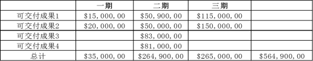
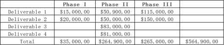
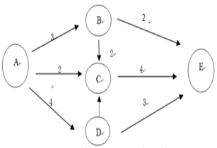
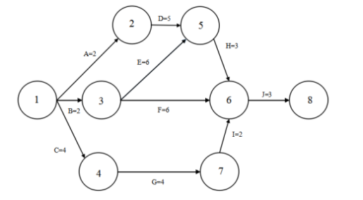

1、
一个项目连续错过交付日期，项目团队评估完该情况后，项目经理意识到团队绩效差的原因在于团队成员对于自己的职责缺乏清晰认识。项目经理首先应该关注哪一项？ A project has
consistently missed the delivery dates. After assessing the situation with the project manager
realizes the poor performance is due to a lack of charity for team member’s responsibilities? What
should the project manager focus on first?
A：创建RACI图 Create a RACI chart
B：巩固领导团队的角色 Consolidate the role of the leadership
C：协商获得具有更高技能的新团队成员 Negotiation for new team member with stronger
skills
D：使用奖励和强制权利激励成员 Use reward and coercive power to motivate the team
2、
作为一个财务问题的结果，卖方 A 将延迟一项关键产品。项目经理识别到另一个卖方，可以提供类似产品。项目经理下一步该怎么做？ As a result of a financial problem,
seller A will delay a key product. The project manager identified another seller who could provide
similar products. What should the project manager do next?
A：向变更控制委员会提交一项变更请求 Submit a change request to the change control
board
B：与潜在卖方召开投标人会议 Hold bidders meeting with potential sellers
C：审查商业论证，确定投资回报 Review business
justification and
determine return on investment.
D：向采购部门提交一份变更请求 Submit a change request to the purchasing department
正确答案：A你的答案：
解析：替换供应商需要走变更流程，重大变更需要向 CCB 提交变更请求。
3、
签约公司未达到质量标准，并且可交付成果频繁延迟. 项目经理发现，现有合同条款无法确保卖方提高绩效. 为避免卖方的低绩效，项目经理本应采取何种行动？ A contracted firm is
not meeting quality standards and the deliverables are frequently late. The project manager
discovers there are no existing contract terms that could ensure a better. What should have been
done by the project manager to prevent the seller’s low performance?
A：让项目经理团队执行影响分析 Have the project manager’s team do an impact
analysis
B：实施绩效审查 Conduct procurement performance reviews
C：实施风险再评估 Conduct a risk reassessment
D：参与合同的详细拟定 Be involved during the contract elaboration
正确答案：B你的答案：
解析：参见PMBOK第6版 中 12.3.2.3 ，考点：绩效审查。
4、
项目经理说：“我现在不能处理这件事。此时，该项目经理用的何种冲突解决技巧？ What conflict resolution technique is a project manager
using when he says, I cannot deal with this issue now!
A：解决问题 Problem solving
B：强迫 Forcing
C：撤退 Withdrawal
D：妥协 Compromising
正确答案：C你的答案：
解析：9.5.2.1， 撤退/回避：从实际或潜在冲突中退出
5、
在定义活动过程中，一团队成员开始讨论一个项目经理从来没有听过的活动。此时项目经理应该怎么做？ During the Define Activities process, a team
member begins to discuss activities that the project manager has never heard discussed. What should
the project manager do?
A：确保团队成员理解并将这些活动包含在活动清单里了 Make sure he has a good understanding of
the activities and include the activities in the activity list
B：询问团队成员需要完成这些活动的原因 Ask the team member to explain why such an
activity would be needed to complete the work package
C：确认所有团队成员都认同这些活动 Make sure the entire team agrees that the
activities should be done
6、
在某建设工程项目的地基开挖过程中，对于因气候原因造成的进度拖后风险，项目经理采取了风险接受的策略。由于在施工期间下特大雨，工程不得不停工3天。项目经理应该怎么做？ During the
foundation excavation of a construction project, the project manager adopts risk acceptance strategy
for the delay risk caused by climate reasons. Due to the extremely heavy rain during the
construction period, the project has to be suspended for 3 days.
A：使用应急储备 To use emergency reserves
B：把项目工期延长3天 To extend the project duration by 3 days
C：要求保险公司赔偿 To make a claim to the insurer
D：与团队成员开会讨论处理方案 To meet and discuss with team members for handling
solutions
7、
在进行自制或购买决策后，你们公司决定对药品研究项目的管理工作进行外包。因为你们公司对项目管理是外行，不能完全了解合同所规定的管理服务范围。因此，最好是签订： After conducting a
make-or-buy analysis and reviewing its results, your company decided to award a contract for project
management services on a pharmaceutical research project. Because your company is new to project
management and does not
understand the full scope of services that may be needed under the contact, it is most appropriate
to award a
A：固定总价合同 Firm Fixed price contracts
B：总价加激励费用合同 Fixed price incentive Fee contracts
C：成本加固定费用合同 Cost plus fixed Fee contracts
D：工料合同 Time-and-materials contract
正确答案：D你的答案：
解析：PMBOK第6版 中 12.1.1.6
8、
你在管理一个项目，该项目开发一种以大豆为原料，不含乳糖，富含镁的高营养饮料。该产品针对的是 50 岁以上的用户。你最近听说你的客户将你们的项目进度报告称为 “汉莫拉比法典
，因为它们看起来是用象形文字书写的，只有埃及人才能读懂。这种情况可以通过以下哪种方法避免： You are managing a project to develop a soy-based,
lactose-free, magnesium-rich
nutritional drink for the “over 50 market. You have recently heard that the client calls your
progress reports the “Code of Hammurabi because they seem to be written in hieroglyphics and are
completely indecipherable to all but an Egyptologist. This situation could have been avoided by
A：在项目开始的时候就通知客户报告将采用的形式 Informing the client at the start of the
project of the types of reports they will receive
B：运用风险管理技术识别来自客户方面的风险 Using risk management techniques to identify
client issues
C：雇佣一名专业报告撰写人员准备标准化的报告 Hiring an expert report writer to prepare
standard reports
D：进行沟通计划 Engaging in communications planning
正确答案：D你的答案：
解析：PMBOK第6版 中 10.1.3.1 规划沟通管理-输出-沟通管理计划
9、
项目经理被任命管理一个开发项目。在测试过程中，发起人决定变更产品的其中一个主要功能。项目经理将会使用下列哪一项来涵盖这个开发成本？ A project manager is assigned
to a development project. During testing, the sponsor decides to change one of the product’s main
functions. The project manager will cover the cost of this development using which of the following？
10、
你是一个商业写字楼建设项目的项目经理。你知道政府部门发布的相关建筑法规、消防法规等，都是你开展质量管理工作的重要依据。你必须保证项目质量计划符合相关法规的要求。这些法规将产生什么作用？ You
are the project manager in charge of a commercial office building project. You understand that the
applicable building code and fire regulations issued by the government authorities are the important
basis for you to conduct quality management. You must ensure that the project quality plan meets the
requirements under applicable regulations. What effect will these regulations have?
A：是规划质量管理过程的输入 is the input to the planning quality management
process
B：有助于进行质量管理革新 contribute to quality management upgrading
C：会导致项目质量成本的上升 will lead to an increase in project quality cost
D：有助于楼房建设质量的优化 contribute to improved quality of building
construction
11、
在开发一个新产品时，耐久性测试是关键路径上的一项重要活动。然而，测试设施被一个优先级较高的项目占用，且占用时间比原计划长。项目经理接下来应该怎么做？ In the development of
a new project the endurance testing is an important activity on the critical path. However, the last
facility is occupied by a higher project. Which is taking longer than initially planned.
What should the project manager do text?
A：为延迟的项目开展根本原因分析 Perform a root cause analysis for the delayed
project
B：审查风险登记册中的适当响应 Review the risk register for the appropriate
response
C：将延期情况通知项目相关方 Inform the project stakeholders about the delay
D：将问题上报给高级管理层 Escalate the issue to senior management
12、
在一个公路施工项中，最近出现了返工的情况，导致项目经理非常担心项目的不一致性成本。项目经理来寻求你的帮助。你能给他的最好的建议是？ In a road construction project,
the rework that happened lately makes the project manager very concerned about the inconsistency
cost of no-conformance. The project manager turns to you for help. What is the best advice you can
offer?
A：重新进行规划质量管理过程 To re-plan the quality management process
13、
廉价的进口商品已经严重影响公司的业务。公司组建一支项目团队,开发新产品方案,希望在目前的$1亿营业收入基础上有所提高。项目团队起草了两套产品方案：产品A有40%的可能性将收入提高到$1.5亿,但有
30%可能性因保证索赔使收入会降低至$6000万.还有30%可能性对收入无影响。
产品B有50%的可能性将收入提高到$1.3亿,但有 20%可能性因保证索赔和诉讼使收入会降低至$8000万.还有30%的可能性收入将保持不变。 A company’s business has
been seriously impacted due to cheaper imports. The company creates a project team to explore new
product options to increase the revenue from the current value of $100 million. The project team
drafts two product options:Produce A has a 40%chance of increasing revenue to $150 million and a 30%
chance of reducing revenue to $60 million due to warranty claims. It also has a 30% chance that
there will be no impact on revenue.
Product B has a 50%chance of increasing revenue to $130 million and 20% chance of reducing revenue
to $80 million due to warranty claims and litigation. There is a 30% chance that revenue will remain
the same.
Which produce provides the best EMV?
A：方案A, EMV为$1.08亿 Option A with EMV of $108 million
B：方案B, EMV为$1.11亿 Option B with EMV of $111 million
C：方案A, EMV为$1.11亿 Option A with EMV of $111 million
D：方案B, EMV为$1.08亿 Option B with EMV of $108 million
14、
在编制人力资源计划时，项目经理发现来自职能部门的一名成员需要经过3天的培训，才能具备某种特定的技能，来完成某个特定的工作包。由于专业的限制，项目团队中没有其他人可以替代该成员。项目经理应该怎么做？ When
preparing the HR plan, the project manager finds that a member from a functional department master a
particular skill only after receiving three-day training to complete a specific work package. Due to
limitation of profession, no other in the project team can replace this member. Then, what should
the project manager do?
A：在项目进度计划中增加3天时间 To add extra 3 days in the project schedule
B：要求他利用业余时间完成这3天的培训 To request him to complete the 3-day training in
his spare time
C：把该培训作为项目工作之一，加入项目计划中，并进行风险分析 To take the training as one of the
project tasks, to participate in the project plan, and to perform risk analysis
D：要求用一个不需培训的成员来替换该成员 To require a member who doesn't need to receive
this training to replace the member
正确答案：C你的答案：
解析：PMBOK（6）P342-9.4.2.6建设团队-培训。旨在提高项目团队成员能力的全部活动。
15、
项目执行阶段，发现一个子团队没有为约定的项目目标工作。项目经理应该查阅哪份文件？ During the project execution phase, it is discovered
that a sub-team is not working toward agreed-upon project goals. What document should the project
manager consult?
16、
项目经理加入一个已经在进行当中的项目。质量审计报告显示，由一个供应商提供的一些材料在材料检查员没有出具批准文件的情况下，获得付款批准。项目经理得知检察员口头表达了批准意见，然后再提供批准文件。
哪一份计划可以帮助项目经理评估这种批准方式是否符合项目管理计划？ The project manager participates in a project under construction
The quality audit report indicates that some materials provided by a supplier has been approved for
payment without obtaining an approval paper issued by the material inspector. The project manager is
told that the inspector has orally approved, then he provided the approval documents.
Which of the following plans can help the project manager assess whether this approval method is in
consistent with project management plan?
17、
由于国文化差异，一个跨国项目的相关方未能批准项目管理计划，为减轻这个问题应该事先做什么？ Because of national cultural differences,
stakeholders of a transnational project failed to approve the project management plan. What should
be done in advance to alleviate this problem?
A：审查问题更新日志，以反映项目管理计划可能不会获得批准 Review the issue update log to reflect
that the project management plan may not be approved
B：要求相关方提前反馈 Ask stakeholders to give feedback in advance
C：更新相关方登记册并了解相关方需求 Update stakeholder register and pay attention to
stakeholder needs
D：用一种通用的沟通语言培训团队 Use a common communication language to train the
team
18、
项目经理成功地将空调采购从 A 供应商转向 B 供应商。新产品检验完毕，并交付了所有项目可交付成果。项目经理下一步应该怎么做？ The project manager successfully
transitions the procurement of air conditioners from supplier A to supplier B, New product
verification is complete, and all project deliverables are met.What is next step for the project
manager?
A：将所有权移交采购部，以便再次订购 Transfer ownership to the purchasing department
to place future orders
B：向供应商 B 授予成本加激励费用采购合同 Award a cost-plus-incentive-fee procurement
contract to supplier B
C：作出自制或外购决定 Conduct a make-versus-buy decision
D：审查采购工作说明书 Review the procurement statement of work
正确答案：A你的答案：
解析：指南-4.7.3.4 组织过程资产更新，采购结束后选取的供应商作为过程资产的一部分加以更新。
19、
对于一个具有战略意义的重要客户资源，项目经理在确认矩阵组织中资源可用性时，发现某个关键资源已调往一个内部项目，项目经理首先应该采取何种行动？ For a strategically
important customer resource, when the project manager identifies a resource availability in a matrix
organization, it discovers that a key resource has been redeployed to an internal project, and what
action should the project manager take first?
A：与项目赞助人协商推迟项目 Negotiate and postpone projects with project sponsors
B：要求项目管理办公室将资源重新调回项目 Request the project management Office to
reassign resources to the project
C：更新风险登记簿 Update the Risk register
D：与职能经理协商将资源重新调回项目 Negotiate resources back to project with
functional manager
20、
项目经理应该使用什么方法来准确收集项目需求，并从多个不同国家的项目相关方获得反馈？ What method should the project manager use to
accurately collect project requirement and feedback from stakeholder located in several countries?
21、
一位团队成员通知项目经理，实际系统速度和计划系统速度之间存在偏差，项目经理感到很惊讶，因为在项目规划阶段未确定这一绩效测量标准，项目经理然后评估是否需要应对这一偏差。
在评估期间，项目经理处于哪一个阶段？ A team member informs the project manager that there is an inconsistency
between the actual system speed and the planned system speed. The project manager feels astonished
because this performance measure has not yet been determined during the project planning phase, then
he assesses whether it is necessary to handle such inconsistency.
Which stage is the project manager in during the assessment?
22、
项目交付日期前两天，项目发起人希望核实是否所有可交付成果均满足业务目标以及在项目生命周期过程中是否已应用所有变更。项目经理从开始就知道文档齐全。项目经理应该向项目发起人提供什么文件？ Two
days before a project’s delivery date. The project sponsor wants to verify that all deliverable meet
the business objectives, and that all the changes were applied throughout the project life cycle.
The project manager knows that the project has been well documented from the beginning. What should
the project manager provide to sponsor?
A：项目管理计划的所有版本 All versions of the project management plan
23、
一位之前未识别到的相关方报告说，他们的职能领域受到很大影响，但没有持续通知他们关键项目的状态，项目经理首先应该做什么？ A stakeholder who failed to identify
the issue previously reports that their functional areas are greatly affected, but does not keep
them informed of the status of key projects. What should the project manager do in the first place?
A：审查项目的沟通方法 To examine the means of communication regarding this
project
B：检查并更新相关方登记册 To check and update the register of stakeholders
C：立即和该相关方开会确认 To immediately hold a meeting with such stakeholder
for confirmation
D：审查并更新沟通管理计划 To examine and update the communication management
plan
24、
项目发起人指示项目经理立即开始一个工期非常紧迫的关键项目，项目经理首先应该怎么做？ The project sponsor instructs the project manager to
immediately kick-off a key project on very tight schedule. What should the project manager do in the
first place?
A：与所有部门一起开会，以获得他们的认同与支持 To hold a meeting with all departments
concerned to seek their approval and support
B：询问发起人该项目得如何获得资金支持 To ask the sponsor how this project gets
financial support
C：收集初始需求以创建项目章程 To collect initial requirements to generate the
project charter
D：起草项目进度计划以确定截止期限是否可行 To draft the project schedule to ascertain if
the deadline will be met
25、
你正在管理一个为期7个月的项目，并且建立和严格执行了项目计划。在工作了5个半月后，这个项目既符合进度又在预算内，但是项目发起人对可交付成果不满意这一情况会导致项目完工延误。防止这种情况的最重要的过程是？ You
are now managing a project with the duration of 7 months and have created and strictly executed the
project plan. After five and a half months, the project is on schedule and budget, but the project
sponsor's dissatisfaction with the deliverables may cause a delay: what is the most important
process to prevent this case?
A：控制风险 To control risk
B：监控项目工作 To monitor project work
C：收集需求和定义范围 To collect requests and to define the scope
D：实施整体变更控制 To perform the integrated change control
26、
某项目需要制造和安装一种设备。该设备已经在国外的工厂完成制造工作。按照原定计划，设备将于两周内运抵现场，用于安装。根据最近出现的一些情况，项目经理认为设备可能不能按期运抵现场。此时应该怎么做？ One
project needs to manufacture and install an equipment. This equipment has been manufactured in a
foreign factory. According to the established plan, the equipment is expected to arrive at the
project site within two weeks and will be installed there. According to what happened lately, the
project manager considers that the equipment may not arrive at the site on schedule. What should he
do right now?
A：立即将这个问题和推迟情况通知客户 To inform the client of this issue and delay
immediately
B：确定这一事件对项目成本和进度的影响 To ascertain the impact of this event on project
cost and progress
C：使用风险储备从当地购买设备，以便按时开始安装 To use risk reserves to purchase the
equipment from local manufacturer, in order to start installation on schedule
D：召开团队会议，制订变通方案 To hold a team meeting and to work out a workaround
plan
27、
项目落后于进度。项目团队发现，通过应用一个替代方法，他们可以加快关键路径上的一个项目可交付成果。然而，这将增加项目成本。项目经理应该怎么做？ A project is behind
schedule. The project team discovers that, by applying an alternate method, they may be able to
expedite a project deliverable on the critical path. However, it will increase the project’s cost.
What should the project manager do?
A：增加额外的项目资源 .Add additional project resources
B：对所有方法开展预期货币价值分析（EMV） Conduct expected monetary value (EMV)
analyses on all methods
C：获得替代方法的批准 Obtain approval for the alternate method
D：将增加的成本更新到项目预算中 Update the project budget with the increased cost
正确答案：C你的答案：
解析：采取纠正措施需要提变更申请
28、
你向项目出资人提供了项目的成本估算，他对估算不满意，因为他认为价格太高了。他要你削减项目估算的15%，你该怎么做？ You provide a project cost estimate to
the project sponsor. He is unhappy with
the estimate, because he thinks the price should be lower. He asks you to cut 15 percent off the
project estimate. What should you do?
A：启动该项目，并不断的节约成本 Start the project and constantly look for cost
savings
B：告诉所有团队成员削减其估算的15% Tell all the team members to cut 15 percent from
their estimates
C：告诉出资人要削减的活动 Inform the sponsor of the activities to be cut
D：加入工资率低的额外资源 Add additional resources with low hourly rates
29、
项目经理发现一个不可预料的高影响风险已经成为项目的一个因素，团队成员之间的自身利益导致问题得不到解决，项目经理必须快速行动，让团队重新集中精力，以便项目恢复进度，项目经理应该使用下列哪一项技术来解决问题？ The
project manager discovers an unpredictable high-impact risk has become a factor in the project.
Self-interest among team members is keeping the issue from being reached. The project manager must
act quickly to refocus the team and get the project on tack.
which of following techniques should the project manager use to resolve the issue？
30、
一家公司将更换使用了10年、不再符合市场需求基于旧平台的集成系统。在项目规划期间，管理人员将一个更灵活的价格结构作为关键需求。高级管理人员还未决定如何满足这项需求，但是同意该需求的战略正确性。在项目执行期间，价格结构的变更将要求频繁的返工和重新测试。下列哪项项目计划元素能够系统的解决这些问题？ A
company will be replacing its integrated systems after 10 years of service from a legacy platform
that on longer meets market needs. During project planning, managers identify a more flexible
pricing structure as a key requirement. Senior managers have not yet decided how to meet this
requirement but agree it is strategically correct. During project execution, changes in the pricing
structure will require frequent rework and retesting. Which of the following is an element of the
project plan that addresses this in a systemic way?
A：项目变更需要获得高级管理人员批准的质量政策 A quality policy requiring project changes
to be approved by senior managers
B：能够从新需求中识别风险的风险应对计划 A risk response plan that would identify risks
from new requirements
C：实施价格结构变更的人员增加计划 A staff augmentation plan to implement pricing
structure changes
D：具有详细实施需求的范围说明书 A scope statement with detailed requirements for
implementation
31、
在高科技产品开发中，为了保证产品成功，在产品最终定型之前，通常要进行大量的测试工作。这种做法被认为是高科技产品开发项目风险管理的有效方法，尽管增加测试会增加项目成本。这属于哪种风险应对策略? In
the development of hi-tech products, to ensure that the product is commercially successful, a number
of tests is usually carried out before the final type approval. This practice is believed to be an
effective instrument for the risk management of hi-tech product development project, even though
more tests means higher project cost. Which kind of risk response strategy does this belong to?
32、
在什么时候通过增加剩余项目的预算（利用业绩表现修正的）达到当前实际的计算EAC的方法最经常使用？ The method of calculating the EAC by adding the
remaining project budget
(modified by a performance factor) to the actual to date is used most often when the
A：在偏离被视为非典型的偏离的时候 Current variances are viewed as atypical ones
B：由于条件发生变化，初始的估计假定不再可信的时候 Original estimating assumptions are no
longer reliable because conditions have changed
C：当前的偏离被视为未来偏离的代表的时候 Current variances are viewed as typical of
future variances
D：初始的估计假定被认为存在根本性缺陷的时候 Original estimating assumptions are
considered to be fundamentally flawed
33、
项目经理把发起人的指示函件通过电子邮件转发给了异地的团队成员，该团队成员收到该邮件后及时发送了邮件回执，并开始采取行动。然而项目经理到项目上去检查时，对项目团队成员的工作非常不满意，坚持说他曲解了邮件的内容。这可能是沟通中哪个环节出了问题？ The
project manager has forwarded the instructions issued from the sponsor to a team member in other
place by email. Upon the receipt of the email, the team member sends the receipt and takes action.
But when the project manager inspects the project site, he is very dissatisfied with the work and
insists that such member has misunderstood the email. Which part of the communication may cause this
problem?
A：项目经理编码错误 Project manager makes a coding error
B：不应该采取电子邮件来传递信息 He shouldn't have transmitted the information by
email
C：缺乏信息反馈 Lack of information feedback
D：没有及时告知收到信息 Failure of promptly notifying that such information
has been already received
34、
你收到客户通知，他们公司对于你们产品的设计标准有点问题将会影响到整个系统。如果这真的发生了将会对你的项目产生大麻烦。客户一个星期之后来与你讨论你的团队能否在这方面返工。过去与这位客户都是非正式的交流，而这次他要一个正式的会议。你将如何准备这个会议？ Your
client informs you that his company has a problem with the current design specification of your
product and how it will interface to existing systems． If this occurs, it could be a major problem
for your project． The client is coming to your office in one week to discuss the problem to see what
your team can do to overcome the setback． All previous meeting ware informal with this client, but
this time he wants a formal meeting． What should you do to prepare for this meeting?
A：更新进度计划并且采取一个被动的角色，因为客户没有告诉你这个潜在问题的细节是什么 Update the schedule and
assume an inactive role since the client has not given you the specifics of the potential
problem
B：确认你的团队已经提高了生产率，让客户看到你们是多么的有效率 Make sure that the team has
increased productivity so the client can see how efficient you team is performing
C：通知团队成员让他们准备一份讨论议题 Assemble the team and ask them to prepare an
agenda for topics to discuss
D：明确每一个成员有他们准备任何议题及所需计划的任务 Make sure that each team members have
their assignments in preparation for any topics and needed plans
正确答案：D你的答案：
解析：项目计划是由项目团队成员编写，由项目经理提交发布，项目经理首先是整合者。
35、
一个项目需要内部资源和外部资源。外部资源通过一份标准采购计划活动。在一场飓风袭击供应商所在地，他们无法满足可交付成果要求的时间期限。哪一个合同将澄清供应商未能满足该合同条款的财务解决方式？ A
project requires internal and external resources. External resources are acquired by a standard
procurement plan. After a hurricane strikes the contracted supplier’s place, they can no longer meet
the required delivery timeline. Which clause will clarify the financial resolution for the
supplier’s failure in the following contract terms?
36、
在项目施工阶段，供应商处发生火灾，导致原材料的供应延迟了一周，项目经理已识别到延迟的风险并包含在计划当中，发生这个事件之后，项目经理首先应该怎么做？ During the project's
construction phase, a supplier has a fire and the supply of raw material is delayed by a week, The
project manager identified the risk of a delay and inclued it in the plan .After the occurrence of
the event, what should the project manager do first?
A：执行风险响应计划 Carry out risk response planning
B：由于材料延误，要求项目延期 Ask for an extension of the project due to delay
37、
在一件设备交付到项目现场之后，最终用户投诉产品与预期不同，为避免这种情况，该使用哪一项工具或技术？ After a piece of equipment is delivered to the
project site, the end-users complain the product is different from what was expected. To avoid this
situation, what tool or technique should manager have used?
38、
生产过程运行图中有 8 个点，其中有一个点在控制界限以外，项目经理如何解读？ How should a project manager interpret an 8-point run in a
process with 1 point
located out of control limit?
A：这属于正常情况，不用采取行动 It is a normal situation, nothing should be done
B：应放宽控制范围 Control limits should be widened
C：这属于不正常情况，生产流程需改进 It is an abnormal situation; production processes
should be corrected
D：这是一个警告信号，质量标准系统需升级 It is a warning signal; quality measurement
systems should be updated
正确答案：C你的答案：
解析：连续 7 个点落在均值上方或下方时，就认为过程已经失控。
39、
在项目执行阶段，批准了一项监管法律，责令立即遵守，这项法律将影响项目的范围，进度和成本，项目经理首先应该做什么？In the phase of project execution, a
regulation was approved and ordered to be duly observed. This regulation will affect the project
scope, schedule and cost. What should the project manager do in the first place?
A：减轻风险 To mitigate risk
B：更新项目管理计划 To update the project management plan
C：将问题升级上报给高级管理层 To submit this issue to senior management
40、
项目遇到了一个未预料到的问题，高级技术领导建议的解决方案没有被团队成员们接受。结果高级技术领导很受挫折。项目经理应该采用哪种技能解决这个问题？ A project has encountered
an unexpected technical issue. The senior technical lead suggests a solution which is not accepted
by some team members. As a result, the senior technical lead becomes frustrated.
What kind of skills should the project manager use to resolve this issue?
41、
在竞价和潜在卖方评估阶段，客户认为潜在卖方所建议的团队成员不符合合作性要求，并要求替换不合格人员。作为潜在卖方的项目经理，应该怎么做? During the bidding and
potential seller evaluation phase, if the customer believes that the team members proposed by the
potential seller do not meet the cooperation requirements and request that the disqualified
personnel should be replaced. What should the project manager of the potential seller do?
A：接受客户的要求，把客户认为合格的人放人这个团队中 To accept the client's request and to
assign the person as the customer considers qualified into the team
B：会见客户，就受质疑人员的能力进行磋商，以确定是否要替换他们 To meet with the client to negotiate
on the capabilities of the persons in question to determine whether it is necessary to
replace such persons
C：不采取任何措施，因为选择谁在这个项目中工作是卖方的事，与其他人无关 To take no action, because
whoever works in this project is the seller's business and has nothing to do with others
D：你知道受质疑的人有能力承担这个工作，因此你依旧把他们放入团队中 You know that the persons in
question are able to take this job, so you still put them in the team
42、
你负责管理某新产品开发项目。高级管理层已经签发项目章程，批准项目计划。项目进度和预算都于十分紧张，质量要求也很高。在项目执行阶段，项目相关方一直通过项目沟通计划所规定的方法了解项目进展情况。项目的范围、进度.、成本和质量都符合项目计划的要求。突然，你得知整个项目有可能被取消，因为开发的产品完全无法接受。导致这种情况的原因是什么？ You
are responsible for the management of a new product development project. The senior management has
issued the project charter and approved the project plan. The project schedule and budget are very
tight and the quality requirements are extremely high. In the project execution phase, the project
stakeholders get to know the project progress by using the method as specified in the project
communication plan. The project scope, progress, cost and quality are in line with the requirements
specified in the project plan. Unexpectedly, you are told that the whole project may be cancelled
because the developed product is totally unacceptable. What is the possible reason?
A：没有识别出某个关键项目相关方 The stakeholder of a key project has not yet been
identified
B：项目相关方误解了项目执行情况 The stakeholder misunderstands the status of
project execution
C：高级管理层不再支持项目 The senior management no longer supports the project
D：项目遇到了技术上的重大难题 The project is stuck in a major technical problem
43、
因为所有的预算已经花光，发起人要求项目经理停止项目，项目经理应该怎么做? Because all budgets have run out, the sponsor requests the
project manager to suspend the project. What should the project manager do?
A：准备变更请求，更新项目范围 To prepare the change request and to update the
project scope
B：记录项目情况，准备最终报告 To record the project conditions and to prepare the
final report
C：寻找新的发起人，更新项目章程 To fine a new sponsor and to update the project
charter
D：与客户洽谈，继续完成剩余任务 To negotiate with the client and to finish the left
tasks
44、
项目团队负责制造 10，000 个小零件。基于集中检查 500 个零件的批次质量是控制质量工具哪一种的实例？ The project team is responsible for
creating 10,000 small parts. Basing the quality of the batch on an intensive review of 500 parts is
an example of what quality control tool?
45、
项目落后于进度，并超出预算。开发和质量保证团队已经报告了大量缺陷。项目经理应更新哪一项内容？ The project is behind schedule and over budget.
The development and quality assure teams have reported numerous defects.
A：问题日志 Issue log
B：验收标准 Acceptance criteria
C：项目管理计划 Project management plan
D：风险登记册 Risk register
正确答案：A你的答案：
解析：大量缺陷是发现的问题，首先更新问题日志。
46、
随着项目管理方法的应用，更多的项目走向成功，但是仍然有不少项目是失败的。很多项目失败的根本原因，实际上并非是难以解决的技术问题，也不是不可控制的外力，而是不良的项目管理实践或有缺陷的项目管理系统。以下哪项不是项目失败的主要原因? With
the application of project management methods, more projects turn out to be successful, but some
projects still fail. The underlying reason that many projects fail is actually not a complicated
technical issue or an uncontrollable force, but rather a poor project management practice or a
defective project management system. Which of the following items is not the main reason for the
project failure?
A：项目经理的项目管理经验不足 Project manager has inadequate experience in project
management
B：没有做好项目计划 Fail to make a good project plan
C：没有充分收集相关方的需求 Fail to collect the sufficient needs of stakeholders
D：忽视平衡各种相互制约的因素 Neglect the factors that check and balance different
constraints
47、
在项目进展会议期间，一位相关方通知团队之前识别的技术问题已经得到解决，但是，该相关方警告说，其他团队项目可能会发生相同的问题，项目经理首先应该怎么做？ During the project
progress meeting, a stakeholder informs the team that the technical issue previously
identified has been resolved, but the stakeholder warns that the same issue may occur in other team
project.What should the project manager do in the first place?
A：更新问题日志 To update the issue log
B：准备一份风险报告 To prepare a risk report
C：与项目发起人沟通该警告 To communicate with the project sponsor as to this
warning
48、
一名项目经理被委任到正在执行的工程项目上。刚上任不久，他发现负责与客户沟通的玛丽经常抱怨客户对报告太挑剔，经常要求她对报告返工。项目经理应该首先做什么？ A project manager is
appointed to a project under construction. Shortly after assuming this position, he finds that Mary,
a member who is responsible for communicating with clients, often complains that a client is too
picky about the report and often asks her to revise. What should the project manager do in the first
place?
A：对玛丽进行报告编写技能的培训 To provide a training of report writing for Mary
B：向客户了解不满和要求 To know the dissatisfaction and requirements from the
customer
C：告诉客户不要太挑剔 To tell the customer not to be too picky
D：让更能干的团队成员替代玛丽编写报告 To replace Mary with more capable member to
write the report
49、
作为一个有经验的项目经理，你知道监控工作贯穿从项目启动到收尾的全过程。你也知道，项目监控的重要目的是要在还有时间解决问题时发现问题。下列哪个工具最有利于你在还有时间解决问题时发现问题? As
an experienced project manager, you know that the project monitoring starts from kick-off and
closing. You also know that the important purpose of project monitoring is to identify issues before
it becomes too late to solve. Which of the following tools is the most beneficial for you to
identify issues before it becomes too late to solve?
50、
一个项目在拥有矩阵式组织结构的公司中启动。没有招聘权限的项目经理可以通过下列哪一项获得项目团队？ A project is instantiated within a company that
has a matrix organizational manager with no hiring authority, could acquire a project team by doing
which of the following?
A：与公司管理层交流 Network with the company's management
B：与职能经理协商 Neonate with functional managers
C：劝说团队成员加入项目 Persuade team members to join the project
D：与项目发起人沟通 Communicate with the project sponsor
正确答案：B你的答案：
解析：9.2.2 获取资源，项目经理没有权限招聘，需要与职能经理谈判获取资源。
51、
项目经理在制定项目进度计划时，希望按照符合逻辑的方式排列任务顺序，并使用至少有高级的承包商。项目经理应该查阅哪份文件？ The project manager wants to arrange
the task order in a logical way and use at least a noble contractor while developing the project
schedule. Which document should the project manager check?
53、
每次你与你的项目发起人会面，她都要强调对于你的新的电子商务项目的成本控制的必要性。她经常询问你成本业绩方面的问题，诸如哪一个预算达到了哪一个没有达到。为了回答她的问题，你应该提供 Each
time you meet with your project sponsor, she emphasizes the need for cost control on your
new-business project. She always asks you about cost performance in terms of which budgets have been
met and which have been met and which have not. To answer her concerns, you should provide
A：绩效测量基准 Cost Performance baseline
B：业绩衡量图表 Performance measurement graphs and charts
54、
下列哪个选项描述的是应急储备金？ Which of the following options describes contingency reserve?
A：为未计划的项目范围和成本变更而储备的预算 Budget reserved for unplanned changes to
project scope and cost
B：为掩盖较差的业绩而储备的预算 Budget reserved for covering poor performance
C：为未计划但是可能由于风险登记册中登记风险成真而潜在要求的变更而储备的预算 Budget reserved for
unplanned but potential required changes that can result from realized risks identified in
the risk register
D：为支付批准变更所产生的超支费用而储备的预算 Budget reserved for covering cost overrun
due to approved changes
55、
某停车场能容纳1000辆车。停车场业主刚刚启动一个改造项目，以便升级车辆进出管理系统和停车引导系统。为了确保项目成功实施，必须记录详细的需求。作为项目经理应该怎么做? The
accommodation capacity of a parking lot is 1,000 cars. The parking lot owner has just kicked-off a
renovation project to upgrade the vehicle access management system and the parking guidance system.
To ensure the successful project execution, the requests must be recorded in details. What should
the project manager do?
A：鼓励项目相关方尽早参与进来 To encourage the stakeholder to participate in the
project as early as possible
B：根据需求确定项目目标 To identify project goal based on specific needs
C：对需求变化进行实时监控 To monitor the change in requests in real time
D：定期召开项目状态评审会议 Tp hold project status review sessions at regular
intervals
56、
你是建设一个生猪养殖厂项目的经理。当地居民和环保团体反对该项目。他们已经提供了一系列数据显示厂里焚烧的内脏和猪尸体将产生有害的甚至有毒的气体，对当地居民有危害。他们威胁要将公司告上法庭。你发现你的大量时间花费在平息他们的担忧。在花费大量时间和精力之后，你说服管理层同意将项目迁至一个新的镇外的厂址。这是以下哪种风险反应的例子： You
are the project manager for the construction of a hog rendering plant. Local residents and
environmental groups are opposed to this project. They have produced reams of data showing that the
volume of entrails and carcasses burned at the site will cause noxious-and possibly toxic-fumes to
which the residents will be exposed. They have threatened to take your company to court. You find
you are spending most of your time trying to work with these groups to alleviate their concerns.
After so much time and effort in these meetings, you convince management to move this project to a
different site outside town. This is an example of which of the following risk responses?
57、
一个项目的项目经理被替换，新的项目经理识别到项目超出预算并落后于进度计划，新项目经理首先应该做什么？ The project manager of a project was replaced.
The new project manager identified that the project exceeded the budget and was behind the schedule.
What should the new project manager do first?
A：要求项目发起人增加预算并延长进度计划 Ask the project sponsor to increase the budget
and extend the schedule
B：获得发起人授权重新组织团队 Obtain the sponsor's authorization to reorganize the
team
C：减少范围去满足初始预算和进度 Reduce the scope to meet initial budget and
schedule
D：识别改进区域加强监控 Identify improvement areas and strengthen monitoring
58、
一个成本控制敏感项目团队分布在三个位置——存在时区、语言、沟通问题。若要解决这些问题，项目经理应该怎么做？ A cost-control-sensitive project has teams
in three locations-with time-zone, language and communication issues. What should the project
manager do to manage these issues?
A：召开定期的视频会议 Hold periodic video-conferencing meetings
B：使用电子邮件让沟通可跟踪 Make communications traceable using email
C：使用拉式沟通方法 Use the pull communication method
D：确保关键任务分配给处于单独位置的团队 Ensure that critical tasks are assigned to a
single location
59、
项目办公室刚刚发布给你一份项目状况检查报告。当你看到在执行总结中标题为“建议”的章节时，你的心情激动起来：你又一次被批评没有为项目提供足够的支持细节。尽管报告没有举例，但是你记得在PMBOK中看到过支持细节，它包括如下全部，除了 The
project office just issued you a project health check report. Your heart races with anticipation as
you scan the euphemistically entitled “recommendations” in the executive summary. Once again, you
have been criticized for failing to provide sufficient supporting detail about the project. Although
the report does not provide examples, you remember reading about supporting detail in the PMBOK It
includes all the following except.
A：命令和交付进度 Order and delivery schedules
B：现金流推算 Cash-flow projections
C：最好和最坏情况下的备用进度表 Best-and worst-case alternative schedules
D：相关方职位报告 Stakeholder position papers
正确答案：D你的答案：
解析：进度数据：可以包括资源直方图、现金流预测、订购与交付进度安排等
60、
某项目主要依靠外部组织的力量来完成，其中一个合同的期限预计为3年，价格可能高达500万美元。买方想要采用总价合同，但又担心潜在卖方在报价中计入过高的通货膨胀应急储备。买方应该选择什么合同？ A
project is completed by relying on the strength of external organization. The term of a contract is
expected to be 3 years, and the price might be up to $5 million. The buyer intends to use lump-sum
contract, but has a concern that the potential seller records excessive inflation emergency reserves
in the offer. What kind of contract should the buyer choose?
A：固定总价合同 Firm Fixed Price (FFP)
B：总价加激励费用合同 Fixed Price Incentive Fee (FPIF)
C：总价加奖励费用合同 Fixed Price Reward Fee
D：总价加经济价格调整合同 Fixed Price plus Economic Price Adjustment (FP-EPA)
61、
在项目中途，一名团队成员告知项目经理，鉴于项目范围的复杂性，估算的项目进度不充分，项目经理首先应该怎么做？ Halfway through the project, a team member
told the project manager that, given the complexity of the project scope, the estimated project was
not progressing sufficiently, what should the project manager do first?
A：管理风险并实施风险响应活动 Managing risk and implementing risk response
activities
B：分析报告以确定最佳的行动措施 Analyze reports to identify best practices
C：收集并记录经验教训 Collecting and documenting lessons learned
D：执行详细的分析，如需要的话可提交变更请求 Perform detailed analysis and submit change
requests if needed
62、
在演示和审查会议期间，进度报告显示一个敏捷项目脱离正轨，项目经理感到很惊讶，因为所有工作都是经过有目的性的选择和排序以满足更高层级的目标。
若要预防这种沟通不畅的问题，项目经理应该事先做什么？ During the presentation and review sessions, the project progress
report indicates that an agile project is off-track, and the project manager is very astonished
because all works are purposefully selected and sorted to meet the higher-level goals.
To prevent this issue of poor communication, what should the project manager do beforehand?
A：鼓励团队自行组织并项目提供支持 To encourage the team to organize and support the
project
B：创建一份应急储备 To generate emergency reserves
C：让团队参与记录敏捷进度报告系统 To involve the team in recording the agile
progress reporting system
D：培训并指导团队使用敏捷方法 To train and guide the team how to use agile methods
63、
一个项目都有特定的服务水平协议，以保证对客户的服务质量。项目经理应使用什么样的工具，来确定该服务的稳定性，以及他的可预测性？ A project has specific service
level agreements which assure quality of service to the customer what tool can the project manager
use to determine that the service is stable or has a predictable performance?
64、
项目团队成员担心一项批准的变更请求会增加范围，延长时间线，但是却不增加预算。项目经理应该怎么做？ Project team members are concerned that an
approved change request might expend the scope, delay the timeline, but does not include the
additional budget. What should the project manager do?
A：寻求可选替代方案，在现有预算范围内管理工作 Look for alternatives to manage work within
the existing budget
B：要求管理层增加预算 Ask management for a budget increase
C：激励团队面对挑战 Motivate the team to meet the challenge
D：拒绝批准的变更请求 Reject the approved change request
正确答案：A你的答案：
解析：项目经理和项目团队应该按照批准的变更执行工作。
65、
项目经理向项目发起人提供增加一个新功能所需的预计活动费用。项目经理参考 WBS 和历史数据后，预计这项活动实际上需要 20 天，在最坏情况下的需要 32 天，在最好情况下需要 14
天。如果每天的费用为$140 元,则增加这项新功能的预计费用是多少？ The project manager provides the project sponsor with an
expected activity cost for adding a new feature. The project manager refers to the WBS and
historical data, and estimates that the activity requires 20 days realistically,32days in worst case
scenario and 14days in a best case scenario. If the cost per day is $140, what is the expected cost
to add the new feature?
66、
在于项目团队成员的非正式谈话中，项目经理发现某个关键部分的供应商在执行一个已获批准的产品变更时有问题。项目经理接下来应执行下列哪一项？ In informal conversations
with project team members, the project manager found that a key part of the vendor was having
problems executing an approved product change. Which of the following should the project manager do
next?
A：实施对供应商的质量审计 Implement quality audits for suppliers
B：安排一次变更控制会议 Schedule a Change Control meeting
C：审查供应商的工作绩效 Review supplier's work performance
D：与供应商的高级经理谈话 Talk to the senior manager of the Supplier
67、
连续的降雨导致山洪暴发，道路被冲毁。如果未来一段时间内继续降雨，道路抢修需要20天；如果晴天，10天就可以修好；不过，从未来一段的天气预报情况推测，最有可能12天完成。完成道路抢修的期望工期为？ Continuous
rainfall causes flash floods and roads are washed out. If it will continue raining for a few days,
the road repair work takes 20 days; if it is sunny, 10 days will be enough; however, it is most
likely to be completed in 12 days according to the weather forecast. What is the expected period of
completing the road repair work?
68、
项目的客户告诉项目经理他已经没钱了，不能再支付该项目。项目经理应该首先做什么？ The customer on a project tells the project manager he
has run out of money to pay for the project. What should the project manager do FIRST?
A：推迟进度中的多数项目工作，以给客户时间去寻找资金 Shift more of the work to later in the
schedule to allow time for the customer to get the funds
B：进入行政收尾 Enter administrative closure
C：停止工作 Stop work
D：解散一部分项目团队 Release part of the project team
正确答案：B你的答案：
解析：每个项目都必须收尾，行政收尾给执行机构带来好处，所以停止工作(选项C)不对。选项 A 和 D 不能解决这个问题，它们只是推迟处理它。
当中断项目资金投入后，即项目提前结束，应执行项目收尾过程。项目收尾包含产品或服务的移交、行政收尾和采办收尾三方面。
69、
有一部分项目工作从外部资源采购，项目团队制定采购计划，并向多个供应商发出建议邀请书，团队从潜在供应商那里获得关于工作的询问，为向潜在供应商提供响应，项目团队应该怎么做？ A portion of
the project work is sourced from external sources, the project team makes the purchase plan and
sends out a proposal invitation to multiple vendors, the team obtains inquiries about the work from
the potential suppliers, and what the project team should do to provide responses to potential
suppliers.
A：向每一位供应商发送单独回复 Send a separate reply to each supplier
B：在项目团队中为每一位供应商指定单个联系人 Assign individual contacts to each vendor in
the project team
C：修订建议邀请书，将对所有问题的回复包含在内，并分发给所有供应商 Revised proposal invitation to
include responses to all questions and distribute to all suppliers
D：召开投标人会议，澄清所有供应商的全部问题 Convene a meeting of bidders to clarify all
suppliers ' issues
70、
项目接近完工，团队成员向项目经理报告一个会影响到重要期限的问题，每周状态报告将在第二天发送主要相关方，项目经理下一步该怎么做？ When the project is nearing
completion, the team members report to the project manager a problem that will affect the critical
period, and the weekly status report will send the key stakeholders the next day, and what should
the project manager do next?
A：更新问题日志，通知发起人并使用问题升级流程，问相关方报告可能延迟 Update the issue log, notify the
initiator and use the escalation process to ask the relevant party to report possible delays
B：在下一次状态周报告中通知相关方，与他们讨论可能的解决方案，并请求预算和进度延期 Notify stakeholders in the
next status week report about possible solutions and request budget and schedule delays
C：核实这个问题是否包含在风险计划中，如不在，则应该将其包含在内，并编制风险减轻计划 Verify that the issue is
included in the risk plan and, if not, include it and prepare a risk mitigation plan
D：更新问题日志，将可以帮助解决问题的所有人员包含在内，并与相关方就此问题进行沟通 Update the issue log,
include all people who can help solve the problem, and communicate with relevant parties on
this issue
正确答案：D你的答案：
解析：9.5.1.2 问题日志，问题日志记录由谁负责在目标日期内解决特定问题，并监督解决情况。
71、
项目选择委员必须在项目 A 和项目 B 之间做出选择，项目 A 的投资回报期为 21 个月，项目B 的成本为 175000 美元，第一年的预期正现金流为 75000 美元，之后每季度的正现金流为
50000美元，项目经理应选择哪一个？ The project selection committee must make a choice between project A and
Project B, project A has an investment return period of 21 months, the cost of Project B is $175000,
the expected positive cash flow for the first year is $75000, and the positive cash flow for each
quarter is 50000 USD, which should the project manager choose?
A：项目 A 或项目 B，因为两个项目投资回报期一样 Project A or project B, as two project
investment return periods
B：项目 B，因为项目 A 的投资回报期更长 Project B because the investment return
period for project A is longer
C：项目 A，因为项目 B 的投资回报期更长 Project A, because Project B has a longer
investment return period
D：项目 B，因为项目 B 的投资回报期更短 Project B because the investment return
period for Project B is shorter
正确答案：D你的答案：
解析：所属知识领域：项目成本管理。所属过程组：规划过程组。解析：在进行项目选择的商业讨论中，投资回收期指标是一个选择方法，根据题意，项目 A 的回收期是 21 个月，项目 B 的回收期是 18
个月（12 个月加上两个季度 6 个月），所以选 D。考点项目回收期。出处：PMBOK第6版 中 7.1
72、
在识别和了解项目风险过程中,项目团队希望通过图形化方式表现风险。这些关键元素包括决策、不确定元素、因果关系和目标。团队应使用哪种类型的风险图解技术？ While working to
identify and understand risk in the project, the project team would like to graphically represent
risks by displaying essential including decisions, uncertainties, causality and objectives.
The team should use what type of risk diagramming technique?
73、
项目经理收到一封正式函件，通知由于组织结构内部调整，某一重要相关方不再作为主抓该项目的负责人，而是作为咨询顾问继续参与项目工作。得到这一信息后，项目经理应该如何处理? The project
manager has received a formal letter, stating that a key stakeholder no longer acts as the project
leader, but continues to participate in the project as a consultant due to internal adjustment in
the organizational structure. Upon the receipt of this information, what should the project manager
do?
A：修改项目文件和项目管理计划 To revise project documents and project management
plan
B：通知团队成员，以后不需要再给该相关方发送报告 To notify the team members that there is no
need to send a report to such stakeholder in future
C：私下沟通，核实该消息的可靠性 To make private communication to verify the
reliability of such information
D：要求项目执行组织解释做出这种调整的理由 To request the project execution organization
to explain for performing such adjustment
74、
在一个工程项目中，项目经理应用了在之前更为复杂项目中成功应用的项目管理方法。项目团队成员抱怨说这类项目的每份文件同行评审需要花费太多的精力。
若要确保质量成本满足项目特征，项目经理应该怎么做？ In one project, the project manager applied a project management method
that was successfully applied in a previously more complex project.
Project team members complain that it takes a lot of effort to peer review every document of this
type of project. What should the project manager do to ensure that quality costs meet project
characteristics?
A：省略同行评审 Omitting peer review
B：查询质量测量指标 Query quality metrics
C：执行质量审查 Implementation of quality reviews
D：在计划中考虑质量成本 Consideration of quality costs in planning
75、
在某个软件开发项目中，卖方已经按照合同要求圆满地完成了项目工作，这时，买方又要求在合同中添加一项新工作。鉴于上述情况，卖方应该如何做? In a software
development project, the seller has successfully completed the project work in accordance with the
requirements as specified in the contract. At this point, the buyer requests to add a new work in
the contract. Given this, what should the seller do?
A：开始合同收尾，并要求就新工作签订新合同 To proceed with the contract closing and to
request a new contract for the new work
B：同意添加新工作，但要求用成本补偿的方式来做 To agree to add the new work, but request
the cost reimbursement
C：拒绝做新工作，因为合同已经完成 To refuse to do new work because the contract has
been completed
D：立即开展新工作，以便维护与买方的良好关系 To immediately start the new work to maintain
a good relationship with the buyer
正确答案：A你的答案：
解析：PMBOK（6）P121-4.7结束项目或阶段。
76、
进行自制或外购分析后，项目经理将已经包含工作分解结构（WBS）中的内容进行外包，项目经理应该采取下列哪一项措施？ After a make-or-buy analysis, the
project manager decided to outsource the deliverables that included in the work breakdown structure
(WBS). Which of the following should the project manager do next?
A：将需要外包的可交付成果从WBS中移除 Remove deliverables from the WBS that will be
outsourced
B：将需要外包的可交付成果保留在 WBS 中 Maintain in the WBS the deliverables that
will be outsourced
C：创建另一个 WBS，仅包含将需要外包的可交付成果 Create another WBS includes only the
deliverables that will be outsourced
D：等到选定外包供应商后才对 WBS 进行更改 Don’t change anything of the WBS until the
outsourcing provider is selected
77、
一个制造项目预期每周将交付 100，000 件产品，周缺陷率不大于 0.01%。在过去四周内的缺陷率却是 0.3%、0.1%、0.1%和
0.45%。项目经理集合了一支专家队，判定原材料不满足质量规范。项目团队决定将有必要修订原材料检查过程。
项目经理应如何处理这些信息？ A manufacturing project is expected to deliver 100,000 items per week at a weekly
defect rate of no more than 0.01 percent. Within the past four weeks, the defect rate was meanwhile
0.3 percent, 0.1 percent, 0.1 percent, and 0.45 percent. The project manager assembles a team of
experts that determines that the raw materials do not meet quality specification. The project team
decides that a revised raw material inspection process will be necessary.
What should the project manager do with this information?
A：执行优势、劣势、机会与威胁（SWOT）分析 Perform a strengths, weaknesses,
opportunities, and threats (SWOT) analysis
78、
在合同执行过程中，买方的一名团队成员要求卖方编制并提交了一份合同规定之外的特殊的项目工作绩效报告。卖方为此向买方提出了额外费用索赔，以弥补它编制报告的支出。针对这种情况，买方的采购管理员应该怎么做？ During
the project execution, a team member of the buyer requests the seller to prepare and submit a
special project performance report that is not specified under the contract. The seller makes a
claim for additional costs to the buyer to recover the expense of preparing the report. In this
case, what should the buyer’s purchasing administrator do?
A：拒绝卖方的索赔要求，并调查团队成员为什么索要这份报告 To turn down the seller’s claim and to
investigate why the team member requests this report
B：请团队成员提出变更请求，以便把该报告加进合同中 To ask the team members to submit a change
request to include the report into the contract
C：向卖方支付费用补偿，并采取合理措施 To pay compensation to the seller and to take
reasonable action
D：防止团队成员以后再索要类似报告 To prevent team members from requesting any
similar reports in future
79、
在项目执行过程中，指定供应商的仓库发生火灾，导致无法按计划为项目提供所需产品。为了不影响项目顺利执行，项目经理决定从原定备用供应商那里.采购所需产品。项目经理的做法属于？ During the
project execution, in case of fire accident in the warehouse of the designated supplier, making it
impossible to provide the required products as per the plan. To avoid affecting the smooth execution
of the project, the project manager decides to purchase the required products from the original
alternative supplier. What kind of his practice belongs to?
A：执行权变措施 Execute contingency action
B：执行弹回计划 Perform resilience plan
C：执行应急计划 Execute response plan
D：执行风险转移 Perform risk transfer
正确答案：C你的答案：
解析：PMBOK（6）P439-11.5规划风险应对。针对发生的已识别风险制定应急计划。
80、
在管理当前项目的时候，非常重要的一点是要运用从以往项目上积累的经验教训来提高项目管理的水平。因此在结束项目或阶段程序中，回顾下列哪项是比较重要的？ When managing current
projects, it is important to use lessons learned from previous projects to improve the
organization’s project management process. Therefore, in Close Project or Phase, it is important to
review the-
A：曾发生过的中等程度的风险 Secondary risks that occurred
B：风险核对单 Checklists for risk identification
C：工作分解结构词典 WBS dictionary
D：团队成员简历 Team members’ curriculum vitae
正确答案：B你的答案：
解析：解析：11.2.2.2 风险核对单。
81、
项目经理了解到主题专家(SME)正在考虑离开公司，该专家资源在其主题领域拥有深厚知识，很难被替代，为确保主题专家能在整个项目期间留在项目中，项目经理与主题专家的经理讨论可能的措施，这些措施应记录在哪些文件中？ The
project manager learned that the subject matter expert (SME) was considering leaving the company,
the expert resource has deep knowledge in its subject area and is difficult to replace, to ensure
that the subject matter expert can remain in the project throughout the project, the project manager
discusses possible measures with the manager of the subject matter, and what documents should be
recorded in these measures?
82、
项目经理注意到正在构建的系统存在多个质量问题，项目经理应该使用什么来跟踪这些问题的解决方案？ Where the project manager notices that there are a
few of quality issues with the system under construction, what should the project manager use to
track the solution to such issues?
83、
定期项目评审过程中，项目经理发现挣值（EV）为 50，000 美元，而计划价值（PV）为 30，000 美元。此外，与预先估算的 15，000 美元相比，已经花费了 35，000 美元。
下列哪一种说法描述了项目的当前状态？ During a regular project review, the project manager discovers that the earned
value (EV) is US$50,000, compare to the planned value (PV) of US$30,000. In addition, US$35,000 has
been spent compared to the pre-estimated US$15,000.
What statement describes the project’s current status?
A：处于正常轨道，并与风险管理计划保持一致 On track, and aligned with the risk management
plan
B：落后于进度计划，且由于许多变量可能偏移 Behind schedule and, due to many variables,
may slip
C：由于有效利用资源，处于正常轨道 On track due to efficient resource utilization
D：由于赶工，超前于进度 Ahead of schedule due to crashing
正确答案：D你的答案：
解析：挣值（EV）50，000 美元大于计划价值（PV）30，000 美元，进度提前。
84、
项目团队正在讨论。幸运的是项目经理已经建立了奖励机制和团队建设，有助于鼓励团队进一步合作。团队最近讨论的一件事是他们是否应自己完成一工作包还是外包给其他人。他们现在肯定是在采购过程的哪个阶段？ The
project team seems to like to argue; they have argued about everything. Luckily the project manager
has set in place a reward system and team building sessions that will help and encourage the team to
cooperate more. The latest thing they are arguing about is if they should complete a work package
themselves or outsource the work to someone else. What part of the procurement process must they be
in?
85、
你决定向以前经常为你的公司服务的一家供货商外包合同。该供货商在履行时间表和成本效益方面记录良好，而且与你建立了良好的工作关系。你现在的项目虽然与以前的不同，但是与该供货商完成其它工作类似。在这种情况下，你应该订立什么类型的合同： You
have decided to award a contract to a seller that has provided its services to your company
frequently in the past. This seller has a good record in terms of schedule and cost performance, and
your working relationship with this seller is excellent. Your current project, although somewhat
different from previous projects, is similar to other work the seller has performed. In this
situation, to minimize your risk you should award what type of contract?
A：固定价格，附加币值调整 Fixed-price with economic price adjustment
B：固定酬金（固定目标） Fixed-price incentive (firm target)
C：固定价格 Firm-fixed-price
D：成本加酬金 Cost-plus-award fee
正确答案：C你的答案：
解析：解析：PMBOK第6版 中 12.1.1.6 合同的类型
86、
项目经理注意到有一个部门完成每个项目活动花费的时间都比计划长。到目前为止，这些活动/工作包都不在关键路径上，也没有影响到已经发生的关键链计划编制。项目经理担心关键链会出问题，因为接下来的5个关键路径活动中有4个要由该部门完成。项目经理打了3个电话，最后总算能和部门经理说上话了，项目经理想知道发生了什么。对话进行得很慢，因为两个人说的是不一样的母语，他们试着用法语—共同语言—讲话。为了使谈话更容易，项目经理总是让部门经理再说一遍。部门经理说，他的下属遵照一项公司政策，该政策要求2级测试。谈话中，部门经理还作出一些评论，这让项目经理相信该政策会增加工作量。这已经是该项目经理第4次听到这样的评论了。他该怎么办？ The
project manager notices that project activities being completed by one department are all taking
slightly longer than planned. To date, none of the
Activities/work packages have been on the critical path, nor have they affected the critical chain
planning that has occurred. The project manager is bothered by the critical chain problem, since
four of the next five critical path activities are being completed by this department. After making
three calls, the project manager is finally able to converse with the department manager to
determine what is going on. The conversation is slow, because both speak different native languages
and they are trying to converse in French, a shared language. To make communication easier, the
project manager frequently asks the department manager to repeat back what has been said. The
department manager communicates that his staff is following a company policy that requires two
levels of testing. During the conversation, the department
manager also makes a comment that leads the project manager to believe that the policy may include
excessive work. This is the fourth time the project manager has heard such a comment. What is the
BEST thing to do?
A：编制更好的沟通管理计划，要求该项目使用一种语言，并安排翻译随时候命 Create a better communications
management plan that requires only one language to be the universal language on the project
and have translators readily available on a moment's notice.
B：联系部门中其他的能更流利的说项目经理母语的成员，来确认部门经理的意见 Contact someone else in the
department who speaks the project manager's native language better to confirm the department
manager's opinion.
C：确认接下来的活动是否要重新估算 Find out if the upcoming activities should be
re-estimated.
D：通过不断的改进存在问题的政策，提高执行机构的效率 Work on increasing the effectiveness of
the performing organization by recommending continuous improvement of the policy in
question.
87、
项目经理发现关键路径上一项活动的开始到结束依赖关系遗漏了。项目进度计划已经与客户沟通，若要避免这个问题，项目经理应该事先做什么？ The project manager identifies
that a finish-to-start dependency for an activity on the critical path is missing. The project
schedule was already communicated to the customer.
What should the project manager have done to avoid this issue?
88、
在一个软件开发项目的规划阶段，如果比承诺交付时间提前两个月交付产品，公司将获得一份奖励，产品开发的项目经理让编程人员在需求和设计完成之前开始代码编写。这种情况下，项目经理在应用哪项进度技术？ During
the planning phase of a software development project, the company is offered an incentive to deliver
the product two months earlier than the agreed upon delivery date. The project manager for the
product development asks the programmer to start coding before the requirements and design are
completed. Which scheduling technique is the project manager applying in this situation?
89、
项目经理被批准执行一个价值1200万美元为期三年的项目，6个月后，25%项目已完成，项目团队开支为400万美元。
计算完进度绩效指数和成本绩效指数后，下一步应该做什么？ The project manager is approved to execute a US$12million, three-year
project. After
25% of the project is completed
What is the next step after calculating the schedule performance index and cost performance index?
90、
项目经理与主题专家（SME）一起估算项目任务。主题专家认为某项活动最可能花45小时完成。但是，在项目团队会议上，相同的活动估计需要花70小时。而有些团队成员认为这项活动能够在32小时内完成。
项目经理应该怎么估算这项活动？ The project manager estimates project tasks with subject matter experts (SMEs).
The SMEs feel that an activity will most likely take 45 hours to complete. However, during a project
team meeting, the same activity is estimated to take 70 hours. Some team members believe that this
activity can be completed within 32 hours. What should the project manager estimate for this
activity?
A：32小时 32hours
B：45小时 45hours
C：47小时 47hours
D：70小时 70hours
正确答案：C你的答案：
解析：三点估算的公式
91、
在项目上，项目经理带领团队运用头脑风暴法完成了风险识别工作。其中有一个风险，大家都认为发生的可能性很小，但万一发生会有很严重的影响。对这个风险，应该采用什么方法加以监控? In a
project, the project manager leads the team to complete the risk identification by using
brainstorming method. In which, one risk is believed by all members to be unlikely, but it will have
a material impact if happened. Which method should be used to monitor this risk?
92、
项目经理要求风险经理开展每月的定量风险分析。风险经理应该提交什么？ The project manager asks the risk manager to conduct a monthly
quantitative risk analysis. What should the risk manager present?
A：蒙特卡洛累积图 Monte Carlo cumulative char
B：风险重新评估 Risk reassessment
C：概率和影响矩阵 Probability and impact matrix
D：根据概率和影响等级来识别风险 Identified risks with probability and impact
ratings
93、
项目 A 已经交付给客户 A ，而且开始开展收尾活动. 项目团队将会转到客户Ｂ的项目上工作. 销售经理要求项目经理提供项目Ａ的售后支持. 项目经理应执行下列哪一项？ Project A is
delivered to customer A and the closure activities are carried out. The project team will be
transferred to work on project B for customer B. The sales manager requests the project manager
provide post-sales support for project A. Which of the following should the project manager do？
A：将项目团队转移到项目Ｂ上，开始新的启动活动 Move the project team to project B and start
new initiation activities
B：建议销售经理获得新的资源 Suggest the sales manager obtain new resources
C：确保项目Ａ的特定知识已获收集，并移交组织 Ensure project A’s specific knowledge is
captured and transferred to the organization
D：拒绝销售经理的请求，并查阅合同 Deny the sales manager’s request and refer to the
contract
正确答案：C你的答案：
解析：南-4.7结束项目或阶段，项目或阶段行政收尾所需的必要活动包括管理知识分享和传递。
94、
在一个最近的项目状态评审会议上，一名团队成员对其他成员非常不满，而且贬低别人在团队中的地位，这个人属于下列哪项提及的破坏性团队角色？ During a recent status review
meeting for your project, one team member was critical of others and seemed to try to diminish their
status on the team. This person was assuming which of the following destructive team roles?
95、
一家公司正在执行一个关键项目，而该项目可能极大影响到公司的收入。首席执行官非常关注项目成功，并承诺分配所有必要资源。
该首席执行官的参与程度应如何分类？ A company is working on a critical project that could greatly impact company
revenues. The CEO has high interest in the project’s success, and is committed to assigning all
necessary resources.
What should the CEO’s level of engagement be classified?
A：管理 managing
B：领导 Leading
C：参与 Engaging
D：支持 Supportive
正确答案：B你的答案：
解析：领导是指相关方知晓项目和潜在影响，并积极致力于保证项目成功。
96、
一家公司正在建设一栋新建筑，该建筑与两年前建造的另一栋建筑具有相同特点，项目发起人需要审查新项目的现金流，以避免上一个项目发生的问题。
项目经理下一步应该怎么做？ A company is constructing a new building which has the same characteristics as
another building constructed two years ago. The project sponsor needs to examine the cash flow of
new project to avoid the issues that occured in the previous project.
What should the project manager do next?
A：审查上一份项目章程 To examine the previous project charter
B：检查上一个项目的经验教训 To check the lessons learned from the previous
project
C：制定新的商业论证 To work out a new business case
D：与上一个项目的项目经理沟通 To communicate with the project manager who is in
charge of the previous project
97、
你刚被指派负责某项目，该项目正处于项目计划阶段风险管理团队负责人向你报告已完成风险识别工作，该负责人对项目存在很多风险表示很担心，为了有效地管理项目风险，项目经理下一步的工作将如何开展? Recently,
you have been assigned to take charge of a project. This project is in the planning phase. The
leader of the risk management team reports to you that he has completed risk identification. This
leader is very concerned that the project may have a lot of risks. In order to manage the project
risks effectively, what should the project manager do next?
A：通过风险分析确定哪些风险最值得管理 To identify which risks are the most worthy of
managing by performing risk analysis
B：为已识别的风险编制有效的应对计划 To prepare an effective response plan for
identified risks
C：开展风险分析工作，进一步了解风险 To perform risk analysis, in order to further
understand such risks
D：为各项风险指定责任人 To appoint the responsible persons for individual risks
98、
一个项目的规模已经大到由指导委员会取代单一的项目发起人，项目经理应该怎么做来适应这个新发展？ The scale of a project is so large that the
steering committee will replace a single project sponsor. What should the project manager do to
adapt to this new development?
A：认识到相关方结构发生了变化，并量身定制与这个团队的沟通 To recognize the changes occurred in
the stakeholders' structure and to customize the means of communication with this team
B：按照最初的计划继续工作，同时认识到该项目现在包括其他相关方 To continue working as per the
initial planning and to recognize that the project includes other stakeholders
C：为团队组织一次新的指导委员会一起召开的会议，继续进行项目工作 To organize a meeting for the new
steering committee and the team to continue the project work
D：与新的委员会分享当前的状态报告 To share the current status report with the new
committee
99、
在项目执行过程中，项目经理评估客户添加更多质量检查请求，由于在初步测试中发现一些缺陷，产品经理对此表示赞同，然而，项目团队却不认为这将有助于实现项目目标，为确保质量，项目经理应该怎么做？ In
the execution of the project, the project manager assessed the customer to add more quality
inspection requests. The product manager agreed with the defects found in the preliminary tests.
However, the project team did not believe that this would help achieve the project objectives. What
should the project manager do to ensure quality?
A：修订过程改进计划 Revise the process improvement plan
B：分析工作绩效信息 Analyze the work performance information
100、
项目经理在会见员工时，不管自己多么忙，多么疲劳，都一定要聚精会神、一丝不苟地与员工交谈，使每个员工都感觉到自己被重视。根据上述内容，一可以判断以下描述都是正确的，除了 When the
project manager meets with employees, no matter how busy or tired, he must be concentrated and
conscientious when talking with the employees, so that individual employees feel being regarded.
Based on the above, the following descriptions can be judged to be correct, except
A：项目经理的有效沟通可以缩小与下级之间的权力距离 Effective communication conducted by the
project manager can reduce the power distance with the subordinate
B：清楚地了解每一个团队成员的需求和期望是项目经理的职责 Clearly understanding the needs and
expectations of individual members is the project manager's responsibility
C：项目经理在会见员工时应该充分使用自己的职位权力 The project manager should make full use
of his position power when meeting with employees
D：项目团队成员可以跨越直接上级与项目经理直接沟通 Project team members can directly
communicate with the project manager instead of reporting to the immediate superior in
the first place
101、
制定项目范围说明书之后，团队已准备好继续进行其他项目活动。项目团队要项目经理为下一个项目会议的活动和成果提供指导。项目经理接下来应该怎么做？ After defining the project
scope statement the team is ready to proceed with other project activity. The team members request
the project manager to provide education about activities and outcomes for the next project session.
What should the project manager do next?
A：列出限制团队更新项目文件选择范围的制约因素 list the project constraints that limit the
team options to update project documents
B：收集需求，创建需求跟踪活动资源 collects the requirement to create the
requirements resource
C：将活动清单排序，估算活动 sequence the activity list to estimate the activity
resources
D：审查之前项目的政策，程序和经验教训，创建工作分解结构 review the policies, procedures, and
lessoned from work breakdown structure
102、
一名工程师在没有提交变更请求的情况下，完成一名项目相关方的可交付成果变更要求。项目经理应该怎么做？ An engineer completes a stakeholder request for
a change in a deliverable without submitting a change request. What should the project manager do?
A：获得为何进行变更的相关信息 Obtain information about why the change was made
B：审查变更的影响，并提交变更请求 Review the impact of the change, and submit a
change request
C：更新问题日志 Update the issue log
D：指示该工程师撤销变更 Instruct the engineer to undo the change
103、
一个为期五年的研发项目项目经理希望将更多的风险放到承包公司，激励他们释放成本，下列哪一个合同类型将满足项目经理的目标？ The project manager of a five-year
research and development project wants to place more risk on the contracting company to motivate
them to keep costs down. Which of the following contract will meet the project manager’s objectives?
104、
一项目经理正在定量计算其项目的风险。她的几名专家都不在身边，但是她想把他们放进来。这该怎么办？ A project manager is quantifying risk for her
project. Several of her experts are offsite, but wish to be included. How can this be done?
A：用互联网作为工具，采用蒙特卡罗分析 Use Monte Carlo analysis using the Internet as a
tool.
B：采用关键路径法 Apply the critical path method.
C：决定纠正措施的备选方案 Determine options for recommended corrective action.
D：采用 Delphi 技术 Apply the Delphi Technique.
正确答案：D你的答案：
解析：Delphi 技术在取得技术问题、项目或产品的范围或风险的专家意见时最为常用。
105、
异常的天气状况危及到一个关键可交付成果的时间线，在这个时候，下列哪一份项目文件对项目经理有帮助？ Which of the following project documents is
helpful to the project manager when the abnormal weather conditions endanger a timeline of key
deliverables?
A：风险登记册 Risk register
B：工作分解结构 Work breakdown structure
C：项目进度 Project progress
D：风险分解结构 Risk breakdown structure
正确答案：A你的答案：
解析：所属知识领域：项目风险管理。所属过程组：规划过程组。解析：异常天气作为一个风险被记录在风险登记册中，已识别的风险应对措施也被记录在风险登记册中，所以选 A
106、
项目准备收尾时，团队成员识别出一个新风险，作为项目经理，应该怎么做？ At the project closing, team members identify a new risk. What
should the project manager do?
107、
在正式建议邀请书发出后，潜在供应商提交了投标文件，所有供应商的投标包包括两个信封，一个是技术提案，另一个是财务提案。项目采购人员收到三份报价：A 供应商了，120 万美元，B供应商：140 万美元；C
供应商：100 万美元。项目采购人员向项目经理通报了选择提案的困难。项目经理忘记向项目采购人员提供什么？ Following the issuance of the formal
proposal, the potential supplier submitted the tender document, and all the suppliers ' tender
packages included two envelopes, one technical proposal and the other financial proposal. Project
procurement staff received three quotations: supplier A, 1.2 million USD, B suppliers: USD 1.4
million; Suppliers: 1 million USD. Project procurement staff informed the project manager of the
difficulty of selecting proposals. What did the project manager forget to offer the project
purchaser?
108、
项目经理正在编写采购工作说明书，以分包新工厂的机器安装任务，项目经理应该查阅哪一份文件来确保其与项目目标一致？ The project manager is preparing
Procurement Statement of Work to subcontract the new factory's machine installation tasks. What
documents should the project manager check to ensure that they are consistent with the project
objectives?
109、
为了制定一份前后一致的风险管理计划，项目经理需要考虑哪些因素？ What will the project manager need to consider in preparing a
coherent risk management
plan?
A：客户的风险态度以及组织过程资产 Customer risk attitude and organization process
assets
B：项目管理计划和事业环境因素 Project management plan and enterprise environmental
factor
C：风险登记册和范围说明书 Risk register and scope statement
D：潜在响应列表和项目管理计划 List of potential responses and the project
management plan
正确答案：B你的答案：
解析：规划风险管理过程的输入
110、
项目分包商没有按照合同规定期限交付工作产品。虽然一再警告，但分包商还是无法交付。项目经理将他们的担忧上报给分包商公司的管理层。但是，这并没有对分包商的绩效带来任何改进。项目经理下一步应该采取下列哪一项措施？ A
project’s subcontractor did not deliver the work products as per the terms of
the contract. Despite repeated warnings, the subcontractor failed to deliver. The project manager
escalated their concerns to the management of the subcontractor’s company. However, this did not
result in any improvement in the subcontractor’s performances The project manager should take which
of the following action next?
A：停止向分包商付款。 Stop payment to the subcontractor
B：启动终止合同的程序。 Initiate termination of the contract.
C：对分包商采取法律措施。 Take legal action against the subcontractor.
D：采取其他纠纷解决过程。 Follow the alternative dispute resolution process.
正确答案：B你的答案：
解析：屡教不改，违反合同，提前终止。见4.7引言。
111、
在进行检查期间，你发现一家供应商没有适当生产可交付成果的一个重要部件。你应该如何做？ During a walk-through, you discover that a seller has
neglected to properly produce a major component of its deliverable. What should you do？
A：坚持卖方遵守质量保证计划 Insist that the seller follow their quality assurance
plans
B：就偏差，通知项目发起人 Inform the project sponsor of the discrepancy
C：通过函件，坚持要求遵守合同 Insist that the contract be adhered to via
correspondence
D：安排会议，讨论偏差 Schedule a meeting to discuss the discrepancy
正确答案：C你的答案：
解析：PMBOK第6版 中 12.3 作为买方在进行采购管理时，主要对结果和目标进行监控，一般不涉及卖方的具体过程管理，备选答案 A 和 D 均属项目过程管理属于卖方的职责，而 B
是否通知项目发起人需要根据问题的严重性而定。
112、
在一个关键项目的中间阶段，项目经理发现项目落后于进度。项目经理应该执行下列哪一项活动将项目拉回到正常进度轨道？ In the middle of a critical project, the
project manager finds that the project is behind schedule.Which activity should the project manager
perform to bring the project back on track?
A：资源平衡 Resource leveling
B：调整提前期量与滞后量 Adjusting leads and lags
C：进度压缩 Schedule compression
D：假设场景分析 What-if scenario analysis
正确答案：C你的答案：
解析：见 PMBOK第6版 中 6.6.2.6-进度控制工具。
113、
项目经理正在制定一个项目计划。项目赞助人得知后，立即让项目经理针对项目成本开展初始粗略评估，以满足未来财政预算的需求。
项目经理采用下列哪一项评估项目成本？ The project manager is developing a project plan, on short notice project
sponsor asks the project manager to create an initial rough estimate of project cost to
satisfy requirements for the upcoming fiscal budget.
The project manager uses which of the following for estimating the project cost?
114、
一个为期两年的项目完成了50%，进度绩效指数1.051和成本绩效指数为1.02。一个新的项目进入投资组合，被视为一个优先级并且高于当前的项目。因此，目前项目失去了三个关键资源。尽管资源紧张，但是高级主管仍然要求项目经理按时完成项目，并且按照预算且不会有额外的资源补给。
项目经理应该怎样做？ A two-year project is 50% complete has a schedule performance index of 1.051and a cost
performance index of 1.02, A new project enters the portfolio and is deemed a higher priority than
the current project. As a result, the current project loses three key resources. Despite
tossing resources, the project manager is asked by senior management to complete the project on time
and within budget without additional resources.
What should do next？
115、
你们公司决定为市场开发一种新的高科技产品，要求你起草项目章程。你起草项目章程时发现无法把项目目标可测量化。下列哪一项是引起这个问题的最可能原因? Your company decides to
develop a new hi-tech product for the market demand and requests you to draft the project charter.
When drafting the project charter, you find that the project goal is immeasurable. Which of the
following items is the most probable reason?
A：项目的范围尚未明确 The project scope has not yet been clear
B：项目的目标尚未明确 The project goal has not yet been clear
C：产品范围描述不清 The description of product range is unclear
D：你自己的相关经验不足 You have less relevant experience
正确答案：B你的答案：
解析：PMBOK（6）P81-4.1.3.1制定项目章程-项目章程。项目章程包含可测量的项目目标。
116、
由于一台设备设计规格中的某一项被忽略了而导致项目延期，而赶制此项需要更长的交货期。为避免这种情况的发生，项目经理在项目规划期间应完成下列哪一项？ A project is delayed
because one item in the equipment specification has been ignored. It will require a longer lead time
to catch up. To avoid this situation, the project manager should have done which of the following in
project planning?
A：制定应急计划 prepare a contingency plan
B：选择更为可靠的供应商 select a more reliable supplier
C：在识别风险过程上花费更多的努力 spend more efforts on the process of risk
identification
D：确保该项不在关键路径上 ensure that the item is a not on the critical path
正确答案：C你的答案：
解析：所属过程组：规划过程组。所属知识领域：项目风险管理。解析：出现这种情况识别风险不充分。
117、
在一个项目的最终阶段，一名关键相关方识别到产品缺失关键功能，必须增加这些功能才能在市场上具有竞争力。项目经理应该怎么做？ During a project’s final stage, a
key stakeholder identifies that the product is missing critical features that must be added to be
marketplace competitive. What should the project manager do?
A：修订范围管理计划。 Modify the scope management plan.
B：更新质量核对表。 Update the quality checklists.
C：遵循变更管理计划。 Follow the change management plan.
D：查看工作说明书（SOW）。 Review the statement of work (SOW).
正确答案：C你的答案：
解析：增加产品功能必须遵循变更流程。
118、
项目经理观察到某些项目团队成员开始一起工作并调整工作习惯，但是，他们彼此不互相信任。项目经理可以得出下列哪一项关于团队的结论？ The project manager observes that
some project team, members begin to work together and adjust work habits, however, they do not trust
each other. The project manager may conclude which of the following about the team?
A：团队处于发展的规划阶段，很有可能前进到执行阶段。 it is in the norming stage of development
and will most probably move on the performing stage.
B：团队处于发展的规范阶段，很有可能倒退回震荡阶段。 It is in the norming stage of the
development and will most probably slip back to the storming stage.
C：团队处于发展的震荡阶段，很好有可能前进到规划阶段。 It is in the storming stage of
development and will most probably move on to the norming stage.
D：团队处于发展的震荡阶段，很有可能倒退回组建阶段 It is in the storming stage of the
development and will most probably slip back to the forming stage,
119、
一名新项目经理与由高级技术人员组成的项目团体工作，在制定项目治理中，新项目经理将有来自高级技术人员的阻力。项目经理下一步该怎么做？ A new project manager works
with a project team comprised of senior technical staff. During the establishment of project
governance, the new project manager anticipates that there will be resistance from the senior
technical staff. What should the project manager do next?
A：为项目团队成员建立角色和职责 Establish roles and responsibilities for the
project team members.
B：制定并同意项目人员配备方案 Establish and agree on project staff assignments.
C：制定工作分解结构 Establish a work breakdown structure.
D：制定并同意团队运行规则 Establish and agree on team operating rules.
120、
一名初级项目经理被指派到一个新启动的项目，高级项目经理指示该初级项目经理去识别在项目中享有既得利益的人员。
高级项目经理让初级项目经理创建的是下列哪一项？ A junior project manager is assigned to a newly initiated project, and
the senior project manager instructs the junior project manager to identify the person who has a
vested interest in the project. Which of the following items is created by the senior project
manager for the junior project manager?
121、
客户启动了一个新的战略项目，该项目必须自年底前完成。该项目对于客户的战略成功至关重要。关于项目范围、预算和进度的意见已经讨论过。
项目章程中还应包含哪些内容？ A customer initiates a new strategic project, Which must be completed by the end
of the year. The project is critical to the strategic success of the customer. An idea about the
scope, budget, and timeline has already been discussed.
What else should be included in the project charter?
A：批准的预算，制定的资源和固定的完工日期 Approved budget, named resources, and
fixed-end date
B：定量的风险、限制和例外情况，已经修订的历程碑日期 Quantified risks, limits and exclusions,
and revised milestone dates
C：总体要求，主要风险和识别的范围 High-level requirements, high-level risks, and
identified scope
D：项目计划，范围计划和资源计划 Project plan, scope plan, and resource plan
122、
A 公司的客户满意度调查显示，由于服务水平下降，客户有投向竞争对手的趋势。随着管制解除的迫近和竞争变得越来越激烈，CEO 宣布将改善客户体验摆在第一位，应该使用下列哪一项技术？ Company
A’s customer satisfaction survey indicates that customers are leaving for the competition due to
deterioration support responsiveness. With the impending deregulation and increased competition, the
CEO vows to place priority on improving client experience.
What project techniques should be used?
A：Q-分类技术 Q-short.
B：参数估算 Parametric estimation.
C：鱼骨图 Fish-bone diagram.
D：敏感性分析 Sensitivity analysis.
正确答案：C你的答案：
解析：客户满意度是质量的评价标准，鱼骨图是质量控制的工具。
123、
项目工期为五个月。项目最初费用拨款总额为30.000美元，目前项目处于第三个月。项目前两个月的总支出为12,500美元。项目完工部分超前于进度符合预算。项目的成本差异是多少？ The
duration of a project is five months. The total cost initially allocated was US$30,000. The project
is in the third month, The total expenditure in the project for the first two months is us$12,500.
The project is ahead of schedule and on budget for work completed.
What is the cost variance of the project?
A：大于零 Greater than zero
B：小于零 Less than zero
C：零 Zero
D：一 One
正确答案：C你的答案：
解析：题干提示“项目完工部分超前于进度符合预算”，所以成本偏差CV=0。
124、
一项目经理和公司中设计铁路设备的团队要设计一台能将石头装载到火车上的机器。该项目允许损耗 2%，也就是每天能损耗超过 2
吨的石块。在下列哪项中项目经理记录该项目的质量控制、质量保证和质量改进？ A project manager and team from a firm that designs railroad
equipment are tasked to design a machine to load stone onto railroad cars. The design allows for 2
percent spillage, mounting to over two tons of spilled rock per day. In which of the following does
the project manager document quality control, quality assurance and quality improvements for this
project?
A：质量管理计划 Quality management plan
B：质量政策 Quality policy
C：控制图 Control charts
D：项目管理计划 Project management plan
正确答案：A你的答案：
解析：选项 B 和 C 都是质量管理计划的组成部分。质量管理计划是项目管理计划的一部分。正确参考答案是选项 A，质量管理计划，参见 PMBOK 8.1.3.1 质量管理计划。
125、
A 项目通过一个组织矩阵进行管理。项目经理向一位高级总裁汇报工作，后者对项目提供实际的帮助。在这种情况下，以下哪个陈述最好地说明了项目经理的相对权力？ Project A is being
administered using a matrix form of organization. The project manager reports to a senior vice
president who provides visible support to the project. In this scenario, which of the following
statements best describes the relative power of the project manager?
A：项目经理很可能不会受到项目相关方的责难 The project manager will probably not be
challenged by project stakeholders.
B：在这个强矩阵中，权力的平衡倾向于职能经理 In this strong matrix, the balance of power
is shifted to the functional line managers.
C：在这个紧密矩阵中，权力平衡倾向于项目经理 In this tight matrix, the balance of power is
shifted to the project manager.
D：在这个强矩阵中，权力平衡倾向于项目经理 In this strong matrix, the balance of power is
shifted to the project manager.
正确答案：D你的答案：
解析：指南-2.4.4.1组织结构类型-表2-1组织结构对项目的影响。
126、
一项目经理刚刚为一 387,000 美元的工程项目编制完风险应对计划。他下一步很可能怎么做？ A project manager has just finished the risk
response plan for a U.S. $387,000
engineering project. Which of the following should he probably do NEXT?
A：确定项目总体的风险级别 Determine the overall risk rating of the project.
B：开始分析项目图纸上出现的问题 Begin to analyze the risks that show up in the
project drawings.
C：在项目的工作分解结构中增加工作包 Add work packages to the project work breakdown
structure.
D：重估项目风险 Hold a project risk reassessment.
正确答案：C你的答案：
解析：本题是在项目计划编制时发生的。计划编制必须在进入下一步之前完成。确定项目的风险级别（选项 A）在定量风险分析过程中完成，应该早就完成了。选项 B
是在项目执行期间完成的工作，重新评估项目风险（选项 D）在风险监控过程中发生，是编制应对计划的下一步。但是本题没有问风险管理过程的下一步是什么。只有选项 C
是在项目计划编制之后的。你现在明白计划编制的顺序了吗？
127、
项目经理的上一个项目曾在范围管理方面遇到麻烦，发起人疲于审批范围变更，而范围变更进而又引发了一系列严重问题。在总结了这个教训之后，项目经理在本项目上应该怎么做? The last project
the project manager was in had troubles in scope management, the sponsor was tired of approving
scope changes, and the scope change caused a series of serious issues. After drawing this lesson,
what the project manager should do in this project?
A：建议发起人保留对范围变更的审批权力 To recommend the sponsor to reserve the power to
approve scope change.
B：建议由自己和发起人共同对范围变更进行审批 To recommend that the scope change should be
approved by him and the project sponsor
C：建议发起人授权变更控制委员会(CCB)对范围变更进行审批 To recommend that the sponsor should
authorize the Change Control Board (CCB) to approve such scope change.
D：建议发起人授权项目管理团队对范围变更进行审批 To recommend that the sponsor should
authorize the project management team to approve such scope change.
128、
在某种特定合同下，确定有可列支成本作为供应商的补偿。供应商已获得$102,000的支付款项。其中$80,000为实际成本。合同原始成本估算为$90,000,$20,000作为奖励酬金。对于实现成本节约，供应商获得其中的20%。
这属于下列哪一个合同类型？ Under a certain contract, a list of allowable costs is established for supplier
reimbursement. The supplier is paid $102,000, of which $80,000 is actual cost. The original cost
estimate of the contract is $90,000 and $20,000 is incentive fee. The supplier gets a 20% share of
cost savings achieved. This is which of the following types of contracts?
A：固定总价加奖励费用合同 Fixed-price incentive-fee
B：成本加固定费用合同 Cost-plus-fixed-fee
C：可按经济指数价格调整的固定总价合同 Fixed-price with economic price adjustment
129、
项目经理正在管理一个软件开发项目的执行工作。在执行过程中，发生了一个风险应对计划中没有包括的风险。项目经理应该怎么做？ The project manager is managing the
execution of a software development project. During the execution process, a risk that is not
included in the risk response plan happens. What should the project manager do?
A：使用应急储备来解决风险的后果 To solve the risk consequence with emergency
reserves
B：把风险的实际情况报告给管理层 To report the actual situation of the risk to the
management
C：召开团队会议讨论权变措施 To hold a team meeting to discuss workaround
D：不理会这个风险，既然计划中没有包括 To ignore this risk, because this risk is not
included in the plan.
130、
一家公司的仓储设施受到风暴影响，这对项目的完成日期和里程碑产生不利影响。项目经理应查阅哪一份文件来找到将解决这种情况的这些人员角色和职责？ A company’s storage
facilities are affected by storms. This negatively impacts the project’s completion date and
milestones. What document should the project manager consult to find the roles and responsibilities
of those people who will resolve the situation?
131、
由于专家对项目需求的意见不一致，项目现在存在落后于进度的风险，项目经理应该怎么做？ A project is at risk of falling behind schedule due to
experts’ differences of opinion over project requirements. What should the project manager do?
A：将问题上报给项目发起人。 Escalate it to the project sponsor.
B：安排一次会议，审查项目范围。 Schedule a meeting to review project scope.
C：提交变更请求。 Submit a change request.
D：妥协，同时关注项目目标。 Compromise, with focusing on project goals.
正确答案：B你的答案：
解析：发现风险先进行评估。
132、
你刚刚被分配到一个处于实施阶段中期的项目任项目经理，你正在确定你将如何控制这个项目，控制这个项目的最佳方法是： You have just been assigned as project
manager in execution phase and you have to determine how you should control the project,the best way
is to:
A：使用综合的沟通方法（使用多面性沟通方法） Use a combination of communication methods
133、
为了确定最长的工期路径，项目团队同时考虑了任务的依赖关系和资源制约条件. 项目经理使用的是下列哪一项进度安排方法？ To determine the longest duration
path，the project team considers both task dependencies and resource constraints. The project team
uses which of the following scheduling methodologies ？
134、
在一个软件开发项目中，开发人员发现一个可以提高速度的新工具。项目经理分析发现这种新工具能够缩短当前开发阶段20%，并节省10%的项目成本。在变更控制委员会批准之后，项目经理修订了项目进度。这属于哪种风险应对类型？ During
a software development project, a developer discovers a new tool that could increase development
speed. The project manager’s analysis finds implementing the new tool could shorten the current
development phase by 20% and save 10% of the project’s cost. After approval from the change control
board, the project manager revises the project schedule. What is the type of risk response?
A：开拓 Exploit
B：接受 Accept
C：增强 Enhance
D：转移 Transfer
正确答案：A你的答案：
解析：11.5规划风险应对，积极风险的应对，开拓，关键字包括新工具，最佳资源
135、
一个团队正在与人际问题做斗争，若要提高团队精神，应该使用哪一种策略？ A team is struggling with interpersonal issues, which strategy
should be used to improve team spirit?
A：建立一个认可和奖励机制，激励各个成员作为团队工作 Establishing a recognition and incentive
mechanism to motivate members to work as a team
B：将团队成员送去参加个人培训，提高他们的技能 Send team members to personal training to
improve their skills
C：为了说明可被接受的行为，制定规矩 In order to demonstrate acceptable behavior,
develop rules
D：让团队在一个共同办公室中集中办公 Keeping teams focused in a common office
136、
因为完成可交付成果1和2需要额外的资源技能，1 期的实际成本为 55,000 美元。项目的可交付成果和质量是不可协商的。在 II 期开始前，项目经理应该怎么做？

The actual cost of phase I is US$55,000,
because additional resource skill sets were requiredto
complete both deliverables I and 2. The
deliverables and quality of the project are nonnegotiable.
Before the opening of phase II
occurs, what should the project manager do?

A：确保具有批准增加 20，000 美元预算的变更管理文件。 Ensure there is a change management
document approving the additional US$20.000 to the budget
B：验证 II 期资源需求的项目计划。 Validate the project plan for phase it’s
resource requirements
C：确定如何从 II 期或 III 期削减 20,000 美元。 Determine how US$20,000 will be cut
from phase II phase III
D：确定相关方应重新考虑 II 期或 III 期的哪些可交付成果。 Determine which deliverables from
phase II of phase 3 the stakeholders should reconsider
137、
有一种激励理论认为，真正能激励人的是工作本身。包括工作中的责任感、职业发展和自我实现等，而不是工作所带来的经济收人。这种激励理论是？ A motivation theory argues
that what really motivates is the work itself, including the sense of responsibility at work, career
development and self-actualization, rather than the economic income from work. What is this
incentive theory?
A：戴明的PDCA循环理论 Deming's PDCA Cycle Theory
B：麦克利兰的成就动机理论 McClelland's Achievement Motivation Theory
138、
新项目经理正在制定项目管理计划，但项目经理对该项目领域没有经验。若要从其他人的讲演中获益，项目经理应该参考下列哪一项？ A new project manager is developing a
project management plan in an area that the project manager has no experience. Which of the
following should the project manager reference to benefit from the experience of others?
139、
一个项目分多个阶段执行。项目团队完成了第一阶段的可交付成果。第一阶段的可交付成果已经过完整性确认。目前正在执行下列哪一项项目过程？ A project is executed in
multiple phases. The project team completed their first phase of deliverables. The first phase’s
deliverables are validated for completeness. Which project process is being performed?
140、
公司总经理刚刚委任你为项目经理，并请你起草项目章程。你从总经理那里得到了项目工作说明书，了解到项目的时间很紧。你也知道公司等级森严、权力距离很大。针对这种情况，制定项目章程的最佳办法是？ Recently,
the general manager has appointed you as the project manager and requested you to draft the project
charter. You receive the statement of work from the general manager and get to know that the project
schedule is very tight. You also know that the company is a hierarchical structure with widened
power distance. In this case, what is the best practice of drafting the project charter?
A：召开头脑风暴会议，与潜在的项目团队成员一起制定项目章程 To hold a brainstorming session and to
work with potential project team members to draft the project charters
B：自己起草项目章程，然后提交给潜在团队成员和其他项目相关方征求意见 To draft the project charter by
yourself, then submit it to potential team members and other project stakeholders to seek
advice
C：与项目发起人一起编制项目章程，然后分发给项目相关方 To prepare the project charter with the
functional manager and to submit it to the project sponsors for signature confirmation.
D：与职能经理一起编制项目章程，并提交给项目发起人签字确认 To prepare the project charter with
the functional manager and to submit it to the project sponsors for signature confirmation.
141、
工作分解结构建立后，项目经理通过头脑风暴发启动了识别风险过程。该过程指出了一些潜在风险. 项目经理应该怎么做？ After the work breakdown structure is
crested, the project manager starts the Identify Risks Process using the brainstorming technique.
During this process, some potential risks are raised. What should the project manager do？
A：更改项目范围以回避风险 Change the project scope to avoid the risks.
B：接受风险并将其预期值纳入项目预算 Accept the risks and include their expected value
to the project budget.
C：确定潜在响应 Define potential responses.
D：实施变通方案以回避风险 Implement workarounds to avoid the risks.
142、
项目的主要相关方要求对一个优先问题立即采取纠正措施，并批准项目经理继续。项目经理下一步应该怎么做？ A project’s major stakeholder requests
immediate corrective action for a priority issue, and authorizes the project manager to proceed.
What should the project manager do next?
A：请求变更控制委员会（CCB）的批准。 Request approve from the change control board
(CCB).
B：评估对关键路径的影响，并更新进度基准。 Assess the impact on the critical path, and
update the schedule baseline.
C：更新问题日志。 Update the issue log.
D：继续进行变更。 Proceed with the change.
正确答案：A你的答案：
解析：对于紧急的变更，项目经理实施后应补走正式的变更流程。
143、
在为一个大型项目工作时，项目经理注意到某个特征的开发人员经常错过最终期限，项目经理应该怎么做？ In a large project, the project manager notices
that a developer with certain characteristic often neglects the deadline, what should the project
manager do?
A：确定该开发人员是否是另一个项目的共享资源。 To ascertain if the developer is a shared
resource for another project.
B：通过电子邮件给该开发人员一个警告，以提高他们的工作质量。 To warn the developer by email to
improve their working quality.
C：将该问题升级上报给该开发人员的直线经理，并要求立即解决该问题。 To escalate the issue to his line
manager and to request that the issue should be solved immediately.
D：私下与该开发人员开会，并在适用情况下提供支持。 To hold a private meeting with this
developer and to provide support where applicable.
144、
在团队会议期间，项目经理不能保持项目团队的注意力，团队成员不断查看电子邮件，并讨论不相关的话题，发生这种问题的原因是什么？ During team meetings, the project
manager cannot maintain the project team’s attention. Team members constantly check emails and
discuss unrelated topics. What is the cause of this issue?
A：项目经理没有准备会议议程 The project manager does not have a meeting agenda
B：项目经理没有沟通基本原则 The project manager has not communicated the ground
rules
C：项目经理处于一个弱矩阵型组织 The project manager is in a weak matrix
organization
D：项目经理的领导力不足 The project manager has inadequate leadership skills
145、
一个关键项目落后于进度，并超出预算。项目管理办公室（PMO）的详细分析表明并非所有关键人员都被识别，并且没有积极的过程来接洽和管理这些人员。项目经理应该采取什么纠正措施？ A critical
project is behind schedule and over budget. Detailed analysis by the project management office (PMO)
revealed that not all key people were identified, and no active process for engaging and managing
them.
What corrective action should the project manager take?
A：改进相关方管理计划。 Improve the stakeholder management plan.
B：查看权力/利益方格。 Review the power/interest grid.
C：控制相关方参与程度。 Control stakeholder engagement.
D：更新沟通管理计划。 Update the communications management plan.
正确答案：A你的答案：
解析：相关方管理计划为有效调动相关方参与而规定所需的管理策略。
146、
一件工作产品临近发布期限，项目经理和团队得知该工作产品的功能不能满足要求，客户已经承诺在计划日期提供功能齐全的产品。
在记录这个问题后，项目经理应该怎么做？ A working product is approaching the release deadline. The project manager
and the team learned that the function of the working product could not meet the requirements. The
customer has promised to provide a full-featured product on the planned date.
After recording this issue, what should the project manager do?
A：在客户测试期间解决该问题 Solve this issue during customer testing
147、
由于生产线错误和缺陷,制造商正面临大量产品退货,产品经理怀疑根本原因可能是培训和/或库存采购和货物分类流程较差，若要确定生产问题的准确的、根本原因,应使用下列哪一项工具? A
manufacturer is experiencing a large number of returned items due to production line errors and
defects. The product manager suspects that the root causes may be training and/or poor inventory
purchasing and sorting processes.
Which to should be utilized to determine the precise root causes of the production problems?
148、
项目实施中，项目业主通常有权在项目工作结束前指令进行工作范围变更。如果业主在项目将要结束时突然口头要求承包商进行某范围变更，且坚持不发布书面变更令。这种情况下应该怎么做？ During the
project execution, the project owner generally has the right to instruct the scope change before
completing the project work. If the owner suddenly requests the contractor orally to perform a
certain scope change before completing the project and insists that no written change order should
be issued. What should the project owner do in this case?
A：实施该变更的成本将全部由业主承担 The cost of performing such change will be borne
by the owner.
B：业主应在变更实施之前支付一半的成本。在变更完成之后再支付另一半 The owner should pay a half of the
cost before performing such change. Pay the rest after performing such change
C：承包商将承担与该变更有关的全部风险 The contractor will bear all risks associated
with such change
D：如果变更不大，承包商应该实施该变更 If this is a minor change, the contractor should
perform such change
149、
项目经理正在考虑项目风险和制约因素，然后组织了一次与高级员工召开的头脑风暴，了解当前流程，项目经理向部门经理讲述了业务影响相关问题，并审查了风险和制约的因素，在咨询信息技术部门的一名方案架构师的意见后，项目经理要求获得输入和评估。项目经理使用的是哪种工具和技术？ A
project manager look at the project’s risk and constrains and then organizes a brainstorming session
with senior staff to understand the current processes. The project manager speaks with department
managers regarding business impacts ,and reviews risks and constraints. Consulting with a solution
architect in the information technology department ,the project manager asks for inputs and
assessments. What tool and technique
is the project manager using?
150、
在一个软件开发项目的执行阶段，一些海外开发成员加入团队，项目经理应首先更新哪一项内容？ In the execution phase of a software development
project, some overseas development members join in the team. Which item should the project manager
update in the first place?
152、
客户要求新产品必须尽快推向市场，客户要求项目经理进一步压缩项目进度，项目经理接下来应该怎么做？ The customer requests the new product to be on
the market as soon as possible, the customer asks the project manager to further compress the
project progress, what should the project manager do next?
A：告知客户进度无法更改 Informing the customer that the progress cannot be
changed
B：要求客户提交变更请求 Request a customer to submit a change request
C：修订关键路径并将新进度通知团队 Revise critical paths and notify the team of new
progress
D：协商变更范围，并压缩进度 Negotiate the scope of changes and compress progress
正确答案：B你的答案：
解析：压缩关键路径上的活动才能够对项目进度压缩，影响关键路径上的活动，应提交变更请求。
153、
项目经理在管理客户期望以及指导实现项目目标方面有困难。若要解决这些问题，项目经理应将客户的高层次需求记录在哪里？ A project manager is having difficulty
managing customer expectations, and directing the achievement of project goals, where should the
project manager have documented the customer’s high-level needs to address these issues?
154、
项目经理与项目相关方开会，收集需求并制作项目需求文档。项目经理下一步该怎么做？ The project manager meets with the stakeholders, gathers
requirements, and develop
the project requirement documentation. What should the project manager do next?
A：制定需求基准，并获得关键关系人的批准 Baseline the requirement and obtain key
stakeholders approve
B：与团队一起创建工作分解结构 Create the work breakdown structure with team
C：准备一份详细的项目范围说明书 Prepare a detailed project scope statement
155、
在项目即将进人收尾阶段时，项目经理发现了一项原来没有考虑到的新风险。该风险一旦发生，可能给最终的可交付成果带来重要影响，甚至可能使其不能被客户接受。项目经理应该怎么做？ When the
project is about to close, the project manager has identified a new risk that was not considered
previously. Should this risk occur, it may cause a significant impact on the final deliverables, and
may even make it unacceptable to the client. Then, what should the project manager do?
A：把该风险的影响通知管理层和客户 To inform the management and client of the impact
of such risk
156、
在项目评审会上，从事活动 AD
的项目团队成员通知项目经理，完成该活动还需要三天，组织的高级经理要求项目经理，即使需要额外的预算，也必须找到方法，按原定基准计划交付项目。项目应该使用什么方法来满足高级经理的需求？
 During a
project
review meeting, the project team member
working on activity
AD
advises the project manager that it will take three more days to complete the activity. The
organization's senior manager asks the project manager to find ways to deliver the project according
to the original baseline plan, even though it may need additional budget. What should the project
manager use to meet the senior manager's needs?
157、
你决定要在公司中组建一个PMP考试的学习小组，邀请公司内部其他的项目经理一起参加，以此帮助大家更好地准备这次考试。由于公司总经理已经决定要奖励每个通过考试的人5000美元，所以每个人都有了很强的动力要通过考试。那么，在组织这个学习小组的过程中你要采用什么类型的沟通方式呢？ You
have decided to organize a study group of other project managers in your organization to help
prepare for the PMP exam. Everyone is highly motivated to earn the credential because the CEO has
decided to pay a ￥5,000 bonus to each person who becomes certified. What type of communication are
you employing in your efforts to organize this group?
A：横向沟通 Horizontal
B：向下沟通 Vertical
C：正式沟通 Formal
D：外部沟通 External
正确答案：A你的答案：
解析：横向沟通：针对项目经理或团队的同级人员
158、
这个图中的关键路径是什么？  In
this diagram, what is the critical path?
159、
你所在的公司正在考虑启动一个新产品研发项目。公司的总工程师要求采用“最先进的设计方法”，公司的营销总监要求未来的新产品要“绝对好卖”，而公司分管生产的副总经理则要求“制造成本低”。公司准备聘请你担任该项目的项目经理。你最应该做下列哪项？ Your
company is considering to kick off a new product development project. The chief engineer requests
that the "most advanced design method" should be used, the marketing director requests the proposed
new product to be "best-seller", while the deputy general manager who is in charge of production
requests “low manufacturing costs.” The company is ready to appoint you as the project manager.
Which of the following options should you do in the first place?
A：优先满足总工程师的要求，因为他是你的顶头上司 To give priority to the request from the
chief engineer because he is your immediate superior
B：优先满足营销总监的要求，以便给公司带来尽可能多的利润 To give priority to the request from
the marketing director, so as to bring substantial profits as much as possible to the
company
C：优先满足生产副总经理的要求，以便最大限度地降低生产成本 To give priority to the request from
the deputy general manager who is in charge of production to reduce production cost to the
extent possible
D：确保所有要求都是可以测量的 To make sure that all requests are measurable
160、
一个项目要求从外部供应商购买一些服务器。标准程序要求在做出采购决策前需考虑三个供应商的报价。项目经理应该怎么做？ A project requires that some servers be
purchased from external vendors. Standard procedure requires that three vendor quotations be
obtained before making a purchasing decision.
What should the project manager do?
A：发出投标邀请书(IFB)。 Send out an invitation for bid (IFB).
B：准备建议邀请书（RFP）。 Prepare a request for proposal (RFP).
161、
管理层已经向你保证如果你提前完成该项目，客户会给你一部分奖励。在最后完成一主要的交付成果时，你的团队告诉你该应付成果满足合同的要求但是不能提供客户所需的功能。如未能如期交付，项目将不会提早完成。你应该采取什么措施？ Management
has promised you part of the incentive fee from the customer if you
complete the project early. While finalizing a major deliverable, your team informs you that the
deliverable meets the requirements in the contract but will not provide the functionality the
customer needs. If the deliverable is late, the project will not be completed early. What action
should you take?
A：就这样递交交付成果 Provide the deliverable as it is.
B：告诉客户情况是这样的，寻找一个双方都能接受的解决方法 Inform the customer of the situation
and work out a mutually agreeable solution.
C：开始由客户编写引起延误的列表以准备谈判 Start to compile a list of delays caused by
the customer to prepare for negotiations.
D：悄悄削减其它活动以为修复该交付成果节约时间 Cut out other activities in a way that will
be unnoticed to provide more time to fix the deliverable.
正确答案：B你的答案：
解析：选项 A 和 D 忽略了客户的最大利益。应已与其它变更命令一起解决了任何延期，所以选项 C 不对。正确的解决方法是和客户谈(选项
B)。你也许还能赢得奖金并找到一个双方都同意的解决方法。想想告诉客户能带来的商誉。
162、
在项目执行过程中，项目团队需要按项目沟通计划的要求召开项目状态评审会议。为了使会议有效进行，沟通计划要求相关成员在预定的状态评审会议之前2天提交项目进展情况报告。尽管他们过去都严格按计划执行，但这次却直到状态评审会议之前4小时才提交了报告。你粗略地看了一下报告，发现其中有几处严重的错误。此时项目经理应该怎么做？ During
the project execution, the project team is required to hold the project status review meeting
according to the project execution plan. In order to make the meeting held effectively, the
communication plan requires the relevant members to submit the project progress report 2 days before
the scheduled status review meeting is held. Although this practice was strictly in accordance with
the plan, but this report is submitted until 4 hours before the status review meeting is held. You
quick-read the report and discover a few of major errors. What should the project manager do in this
case?
A：照常召开状态评审会议，并计划在会议上纠正这几处错误 To hold the status review meeting as
usual and to plan to correct such errors at the meeting.
B：要求团队纠正错误，并推迟状态评审会议 To request the team to correct such errors and
to postpone the status review meeting
C：查明是谁引起的错误，并加以处罚 To identify who caused such errors and to impose
punishment where appropriate.
D：照常召开状态评审会议，并看看其他人能否发现这几处错误 To hold a status review meeting as
usual and to see if others can find such errors.
163、
项目经理希望确定产生项目中大部分问题或缺陷的原因。为帮助确定问题，项目经理应该使用哪项工具？ A project manager wants to identify the causes
that product the large majority of the problems or defects in a project. Which tool should the
project manager use to help identify the problem areas?
A：控制图 Control charts
B：流程图 Flow chart
C：帕累托图 Pareto chart
D：散点图 Scatter diagram
正确答案：C你的答案：
解析：帕累托图，是一种特殊的垂直条形图，用于识别造成大多数问题的少数重要原因。
164、
项目经理与客户一起进行检查，确认项目可交付成果是否符合产品验收标准并满足客户的期望。这些行动属于下列哪一个过程的组成部分？ The project manager conducts an
inspection with the customer to confirm that the project deliverables meet the product acceptance
criteria and fulfill the customer’s expectation. These actions are part of which of the following
processes?
165、
一个多阶段项目发起人离开公司，项目文件已获得批准并满足其目标。资源预算已到位。项目经理接下来应该怎么做？ The sponsor of a multiphase project quits
the company. The project is documented and is meeting its objectives. The resourcing budget is in
place. What should the project
manager do next?
A：在离开组织的发起人的主管同意下，评估项目的持续需求 Assess the continuous project need by
agree of the superior of the sponsor quit
B：立即开始项目收尾过程 immediately start the project closing process
C：检查与商业论证的符合性 check alignment with the business study
D：延迟重新评估，直至项目结束并资金已经完全使用。 delay reassessment till the prefect
funding has been used at the end of the project
正确答案：C你的答案：
解析：如果商业论证符合组织需求，发起人更换，项目也可以继续。
166、
以下哪一项最好地说明了在信息有限地情况下进行的成本或周期预测的特点？ Which of the following statements best characterizes a cost or
duration estimate developed with a limited amount of information?
A：它应该是需要的管理储备规划的一部分 It should be part of the planning for the needed
management reserve.
B：它是识别风险的输入项 It is an input to identify risks.
C：它是识别风险的输出项 It is an output to identify risks.
D：它是项目风险优先排序中必须考虑的因素 It must be factored into the list of
prioritized project risks.
正确答案：B你的答案：
解析：参见PMBOK第6版11.2.1.2项目文件，成本估算和持续时间估算作为识别风险的输入项
167、
项目团队定期向客户演示软件。客户在这些演示中请求变更，然后团队合并这些变更。这导致团队落后于进度计划。
若要预防这个问题，项目经理应该事先做什么？ The project team demonstrates software to a client on a regular basis. The
client requests changes among demonstrations, which the team then incorporates. This causes the team
to fail behind schedule.
What should the project manager have done to prevent this?
A：使用快速跟进 Used fast tracking
B：将这种变更定义为项目风险 Defined the changes as project risks
168、
项目经理从一个符合进度和预算的项目中辞职。在聘用了替代的项目经理后，项目经理提出的意见被团队成员反对。团队处于下列哪一个发展阶段？ A project manager resigns from
a project that is on schedule and on budget. A new project manager is hire, the team members oppose
the ideas presented by the new project man. The team is in which of the following stages of
development?
A：形成阶段 Forming
B：规范阶段 Naming
C：成熟阶段 Performing
D：震荡阶段 Storming
正确答案：D你的答案：
解析：震荡阶段：团队成员不能用合作和开放的态度对待不同的观点和意见。
169、
项目经理将一个变更请求通知指导委员会这属于下列哪一项范畴？ The project manager informs the Steering Committee of a change
request which of the following categories?
A：推式沟通 Push type communication
B：纠正措施 Corrective action
C：公开沟通 Open communication
D：预防措施 Preventive measures
正确答案：A你的答案：
解析：参见 PMBOK 10.1.2.4。考点：推式沟通。
170、
午餐时，你会遇到一位管理大型营业额化工厂项目的同事。你的同事很担心，因为客户是不理性的，要求进行对范围计划和成本产生严重影响的变更，客户也没有准备好接受对时间表和成本的额外影响。同事寻求你的建议，此时应该怎么做？ At
lunch, you will meet a colleague who is managing a chemical plant project with high revenue. Your
colleague is very concerned because the customer is irrational and he requests changes that have a
serious impact on scope planning and costs, the client is not ready to accept the additional impact
on timeline and cost. The colleague seeks your advice, what should you do in this case?
A：拒绝让步，不做任何改变 To decline to compromise and make no changes
B：要求其执行管理层对客户提起法律诉讼 To request its executive management to lodge
legal proceedings against the client
C：最终客户永远是对的,所以继续进行改变吸收对成本，进度和范围的影响 The final client is always right,
so keep making changes to absorb the impact on cost, schedule and scope
D：与客户建立会议，以更好地了解变更的必要性要求 To convene a meeting with the client for
better understanding the necessity for making such changes.
正确答案：D你的答案：
解析：PMBOK（6）P113-4.6实施整体变更控制
171、
办公楼建设项目已进人内部装修阶段，某一重要相关方来项目进行视察，口头要求给所有办公室增加百叶窗帘。这项工作本不在项目工作范围内。此时，项目预算还有较大结余。作为项目经理，你最好做什么？ When
the office building construction project has entered the interior finish stage, an important
stakeholder inspects the project site and orally requests that all offices should be added with
blinds. This is beyond the project scope. At this point, there is a large amount of budget surplus.
As the project manager, what is the best practice for you?
A：直接拒绝他的要求 To turn down his request straightforwardly
B：请他提交正式的书面变更请求 To request him to submit a formal written change
request
C：动用项目预算满足他的要求 To meet his requirement with the project budget
172、
你所在的公司主要生产方便面。你们的产品一直很受消费者的欢迎，更没有出现任何与食品安全有关的质量问题。但是，最近一个月，你们已经接到三次关于质量问题的消费者投诉，说是在食用方便面之后发生腹泻。被消费者投诉的产品，是一种新型的产品，其中有一种新的调味品。它是通过一条专门的作业线添加的。公司高级管理层任命你领导一个团队来调查所发生的问题。你和你的团队决定使用以下哪一种技术? The
main product line of your company is instant noodles. Your products have been very popular among
consumers, no quality issues concerning food safety occurred. But you have received three consumer
complaints about quality issues in the last month, claiming diarrhea after eating your instant
noodles. The product complained by consumers is a new product type, including a new seasoning. It is
added on a dedicated production line. The senior management of the company appoints you as a team
leader to look into the issues that occurred. Which of the following techniques do you and your team
decide to use?
173、
项目被认为处于失控状态，原项目经理已经辞职，新项目经理被要求核实项目当前的质量水平并采取纠正措施，项目经理首先应当怎么做? The project is considered to be
out of control, the former project manager has already resigned, the new project manager is required
to verify the current quality level of the project and take corrective actions. What should the
project manager do in the first place?
A：审核项目管理计划 To review the project management plan
B：制订风险应对计划 To work out a risk response plan
C：着手绘制控制图 To draw up the control diagram
D：和团队开会讨论 To hold a meeting with the team to discuss this matter
174、
高级管理层将项目经理分派到一个国际开发项目上。项目发起人提供文件，作为编制项目章程的依据。项目经理拥有工作说明书、合同、组织过程文件以及其它文件。项目经理下一步应该怎么做？ Senior
management assigns the project manager to an international development
project. The project sponsor provides documents as input to develop the project charter. The project
manager has the statement of work, business case,contract, organizational process documents, as well
as other documents.
What should be the next stop for the project manager?
A：整理所有文件，将利用他们作为编制项目章程的依据 Consolidate all the documents and use them
as input to the project charter.
B：将奖励集中在最重要的文件上，仅把这些文件作为依据 Concentrate on the most important
documents and use only these documents as input
C：使用专家判断技巧，评估所有依据文件 Use the technique of expert judgment to assess
all of the input documents
D：使用石川图来验证文件 Use an Ishikawa diagram to caudate the documents
175、
由于另外一位项目经理离职，你接手了他的项目。你所在的公司是一个职能型的组织，不同部门之间互相充满敌意。你负责的这个项目是一个大型的项目，项目活动均是公司之前没有接触过的。你发现项目文件还是比较齐全，包括项目章程、项目管理计划和工作分解结构等等。项目进度和预算均在计划内。然而，团队会议上的气氛总是很紧张，与会者即兴的发言充分表明他们对项目非常不满。你和主要相关方评估了所有的主要项目文件，大家一致认为这些文件都还是很准确的，但这种举措似乎没有解决实际问题。出现此种问题的最佳原因应该为： You
have taken over a project from another manager who left the firm. This is a functional organization
and the different units are often rather hostile to each other .The project is a large one involving
activities that the organization has never done before .You find that the project has what appears
to be adequate documentation, including an agreed-to project charter, project management plan, WBS,
etc., The project is on schedule and within budget. However, the atmosphere in meetings with the
project members often seems tense, and offhand comments made by participant seem to indicate a high
level of dissatisfaction with the project. You review all of the major project documents with the
key stakeholders and get agreement that they are still accurate, but this does not seem to solve the
problem. What is the MOST likely explanation for this situation?
A：团队成员之间存在个性冲突，需要你来发现并给予解决。 There are personality conflicts among
the project team members that you need to uncover and resolve.
B：此项目没有一个有效的发起人，所以没有较高的优先级。 The project does not have an effective
sponsor and thus is not viewed as a high priority.
C：相关方对项目的完成结果存在不同的期望。 Stakeholders have very different expectations
about what the project is supposed to accomplish.
D：公司的组织结构及动因防碍了团队成员之间有效的协作。 The organizational structure and
dynamics prevent people from working together effectively.
176、
PMP 所在公司打算成立一个 PMO,其上司要求他们指导可能的新项目经理如何制定一份项目章程。PMP 最适当回应是什么? A PMP’s company is trying to
establish a PMO. The PMP’s boss asks them to instruct possible new project managers on how to create
a project charter.
What will be the PMP’s MOST APPROPRIATE response？
A：表示同意。因为他们正在帮助发展项目管理的专业. They agree because they are possible
helping to develop the profession.
B：表示拒绝。因为在未获得组织许可的情况下,告知有关 PMI 的知识是不道德的. They decline because it
would be unethical to talk about PMI knowledge without the organization’s permission.
C：表示拒绝。因为他们将会散播有关项目管理专业人员的保密信息. They decline because they will be
spreading confidential information about the project management profession.
D：表示同意。因为将会产生与承担此项活动有关的个人利益. They agree because there will be a
personal gain associated with undertaking this activity.
177、
前任项目经理编制了项目预算。在项目进入执行阶段不久，他就离职了。项目经理刚就任该项目的项目经理。通过审查，项目经理发现这个项目预算明显不可行。项目经理应该怎么办? The former
project manager has already prepared the project budget. Shortly after the project proceeds with the
execution phase, he resigns. The project manager has just been appointed as the project manager.
Through examination, the project manager finds that the project budget is clearly infeasible. Then,
what should the project manager do?
A：不采取任何行动，反正没有人指望你能在预算内完工 To take no action, anyway no one expects
you to complete the project on budget.
B：重新编制项预算，并按新预算执行 To rework the budget and to perform the new budget
C：向公司报告前任项目经理的无能 To report to the company that the former project
manager is incapable of his work
D：向公司提交情况分析报告 To submit to the company the situation analysis report
178、
在执行管道项目的过程中，管道施工承包商提出使用某种更高级的材料而不改变项目工期和成本目标。在此项改变得到批准后，应该更新哪个文件？ During the pipeline project
execution, the pipeline construction contractor proposes using certain higher-grade material without
changing the project duration and cost target. After such change is approved, which document should
be updated?
179、
你的项目团队中有两名成员在过去几周的时间里一直在争论对于这个项目来说哪个项目管理软件最有效的问题，而你已经对他们的争论感到厌烦。因此，你决定要召集一次会议，借机看看他们能否在意见上求同存异，进而向着最佳的解决方案努力，并最终达成共识。你将使用下列哪种类型的争端解决方法？ Two
of your team members have been arguing for the past several weeks about which project management
software will work best for the project. You are tired of listening to them. So you decide to
conduct a meeting to see whether they can reach consensus on the matter by identifying common points
of agreement and striving for fair resolution.
Which style of conflict resolution will you employ?
A：退步型 Withdrawal
B：缓和型 Smoothing
C：问题解决型 Problem solving
D：妥协型 Compromise
正确答案：B你的答案：
解析：9.5.2.1 ，注意：求同存异（努力争取解决问题，并没有说问题解决了）。
180、
客户和供应商已经签署了一份合同，合同中约定了项目需求。由于对此类项目具有非常丰富的经验，项目经理指示计划编制团队绕过制订工作分解结构(WBS)这一过程，直接开始安排资源和任务。项目经理从计划中删掉了客户的其中一项需求，因为根据项目经理的经验认定这项需求是没有必要的。但是在项目进行到一半的时候，人工成本就已经超出预算
30%了。
下列哪个原因最有可能造成这种情况? The customer and supplier have signed a contract stipulating the project
requirements. Due to extensive experience on this type of project, the project manager instructs the
planning team to bypass the development of a work breakdown structure (WBS) and begin scheduling
resources and tasks. The project manager has dropped one of the customer’s requirements from the
plan because the project manager’s experience has shown that it is NOT needed. Midway through the
project, the labor costs exceed the budget by 30 percent.
To what reason would this MOST likely be attributed?
A：未能成功使用参数估算技术 Failure to use parametric estimating techniques
B：未识别的工作没有列入预算 Unidentified work not being budgeted
C：未能成功使用非参数估算技术 Failure to use non-parametric estimating technique
D：有缺陷的缩减 Flawed contracting
正确答案：B你的答案：
解析：范围定义出现纰漏导致铁三角中的成本基准发生缺失。
181、
准确和无误差的数据是量化风险分析的基本要求。以下哪一项是你应该用来考察对项目风险理解程度的？ Accurate and unbiased data are essential for
qualitative risk analysis. Which of the following should you use to examine the extent of
understanding of project risk?
182、
项目团队担心为保持进度计划将需要过度加班。目前，一个产品部件需要花两倍时间生产。项目经理应该通过执行下列哪一项来调整这个问题？ A project team is concerned that
excessive overtime will be required to maintain the schedule currently, one product component is
taking twice as long to manufacture. The project manager should investigate the issue by performing
which of the following?
183、
担心与项目无关的邮件数量，一名团队成员认为其中一个可交付成果将延迟，因为在读和回复邮件上花费了大量时间。项目经理应该怎么做？ Concerned about the quantity of
irrelevant project-related emails, a team member think one deliverable will be delayed, because of
the time spent reading and replying to emails.What should the project manager do?
A：要求团队成员加班完成工作。 Ask the team member to work overtime to complete the
work.
B：要求项目团队更改项目沟通管理计划。 Ask the project team to change the
communications management plan.
C：与项目团队一起强化时间管理计划指南。 Reinforce the time management plan guidelines
with the project team.
D：与项目团队一起强化沟通管理计划指南。 Reinforce the communications management plan
guidelines with the project team.
184、
在项目规划阶段，项目经理完成进度计划。若要确定总体进度计划的灵活性，项目经理应使用下列哪项工作或技术？ During the project’s planning phase, the
project manager completes the schedule
planning. To make sure the overall flexibility of schedule, the project manager should use which of
the following work or technical?
A：关键路径分析 Critical path analysis
B：赶工 Crashing
C：资源平衡 Resource leveling
D：资源日历 Resource calendar
正确答案：A你的答案：
解析：指南-6.5.2.2关键路径法，进度计划灵活性受浮动时间影响
185、
项目经理被任命管理一个为期多年的项目。在创建工作分解结构（WBS）过程中，项目团队无法分解将在项目后期发生的某些阶段。项目经理应该怎么做？ A project manager is
assigned to a multiyear project. During creation of the work breakdown structure（WBS）, the project
team is unable to decompose some of the phases that will occur during later stages of the project.
What should the project manager do？
A：适当的时候，开展滚动式规划。 Conduct rolling wave planning when appropriate
B：回到需求收集阶段 Return to the requirements gathering stage
C：为这些阶段预估WBS分解 Estimate WBS decomposition for those phases
D：减少项目范围 Reduce the project scope
正确答案：A你的答案：
解析：参见 6.2.2.3 。考点：滚动式规划。
186、
为了尽可能减少个人偏见对供应商选择所产生的影响，下列哪种是把定性数据定量化的方法？ What is the method for quantifying qualitative data to
minimize the effect of personal prejudice in vendor selection?
187、
项目进入关键阶段，发起人非常担心返工带来的风险，可以用哪个工具消除发起人的担忧？ The project entered a critical phase, the initiator is
very worried about the risks brought by rework, which tool can be used to eliminate the sponsor's
concerns?
188、
你所在的公司采用职能型组织结构，各部门各自为政、分工负责，不能为完成跨部门的工作而有效合作。受管理层的委派，你刚刚接任某个大型项目的项目经理。你发现该项目的启动和计划文件都比较齐全，拥有项目工作说明书、项目章程、项目管理计划和项目文件等。按照项目沟通计划的规定，你正在主持召开项目状态评审会议。尽管项目执行完全符合计划，但是参加会议的项目团队成员不经意间流露出了对项目的很大的不满。存在这种情况，最可能的原因是什么? Your
company adopts a functional organizational structure. All departments are self-governed with
division of labor and cannot cooperate effectively for the completion of cross-departmental work.
You have been just appointed by the company management as the project manager of a large project.
You find the project kick-off and planning documents are complete, including statement of work,
project charter, project management plan and project documents. According to the project
communication plan, you are presiding over the project status review meeting. Although the project
execution is in full consistency with the plan, but the project team members who are present at the
meeting showed great dissatisfaction with the project unconsciously. What is the most likely reason
for this?
A：项目团队成员对项目有不合理的要求 Project team members make unreasonable requests
for the project
B：高级管理层对项目的支持力度不够 The senior management provides inadequate support
for the project
C：不同的相关方对于项目有不同的要求 Stakeholders have different requests for the
project
D：职能型组织结构不适用于这类大型项目 Functional organizational structure does not
apply to this large project
正确答案：D你的答案：
解析：PMBOK（6）P47-表2-1组织结构对项目的影响。
189、
项目目标是为汽车行业开发改进部件，对原型的测量发现，这些通常都超出技术规定界限。分析显示造成这些差异的原因有多种。
项目团队如何确定应首先解决哪个原因？ The aim of a project is to develop improved components for the automotive
industry
Measurements on the prototypes show that these are often outside the specification limits.
An analysis identifies multiples reasons for the variations,
How does the project team determine which cause to address first?
A：鱼骨图 Fishbone diagram
B：控制图 Control chart
C：帕累托图 Pareto diagram
D：趋势图 Run chart
正确答案：C你的答案：
解析：帕累托图，是一种特殊的垂直条形图，用于识别造成大多数问题的少数重要原因。
190、
项目经理最有可能面临的人员问题发生在什么时候？ When does project manager most likely face personnel problem?
A：提交项目报告时 Submitting project report
B：客户来访期间 Customer visiting
C：项目交界点上 The project stage point
D：设计审核会议期间 Designing project review meetings
正确答案：C你的答案：
解析：涉及到人员平滑过渡的问题。
191、
离完成分配的任务只剩 30
天时，一名项目团队成员离开公司。可惜的是，没有可用的替代资源。项目经理在项目进度计划中包含一个应急储备金。为了计算剩余的应急储备金，项目经理应该使用什么技术？ From the
completion of assigned tasks only 30 days, a project team members leave the company. Unfortunately,
there is no available alternative resources. Project manager includes a contingency reserve in the
project schedule. In order to calculate the remaining contingency reserve, the project manager
should use what technology?
A：风险审计 risk audit
B：趋势分析 trend analysis
C：储备分析 Reserves analysis
D：技术绩效衡量 Technical performance measurement
正确答案：C你的答案：
解析：所属过程组：监控过程组。所属知识领域：项目风险管理。 考点：风险监督的工具和技术：储备分析。
192、
在与相关方召开的批准会上，另一名之前没有提供意见的相关方，质疑项目基准的有效性。在冗长的讨论之后，很明显无法获得最后批准。
项目经理应该采取的适当措施是什么？ During the approval meeting with the stakeholders, another stakeholder, who has
not previously provided input, challenges the project baseline. After lengthy discussions, it
becomes clear that final approval cannot be given.
What is the appropriate action for the project manager to take?
A：说明项目基准的详细情况，并从计划过程开始评估意见数据 Clarity the details of the baseline and
evaluate the input date from the planning process
B：向相关方解释在该阶段无法考虑这个意见的原因 Explain to the stakeholder why this input
cannot be considered at this stage of the project
C：让相关方提出变更请求评估新的情况 Ask the stakeholder to formulate a change request
to evaluate the new situation
D：坚持获得项目计划批准，并在后续阶段对新意见开展调整 Insist on project plan approval and
investigation of the new input at a stage
正确答案：A你的答案：
解析：题环境描述，现在正在开批准会议，也就是说基准只是一个概念，目前还未获得批准，开会的目的就是为了批准，没有经过批准的基准不能算为真正的基准，准确的称谓应该是：待批准的基准，因此，既然还没有批准就不存在变更问题，变什么呢？没有批准不用申请变更，所以选
D 错误！相关方不同意基准，说明之前没有征得该相关方的意见，忽略了该相关方，他对这个基准形成的过程和数据不清楚，因此要从头开始介绍给他，与他一起分析相关数据，让他参与进来才是正确选项，所以选 A。
193、
客户决定更换信息技术服务提供商供应商 A。客户与供应商 B 协调一项协议立即开始服务。项目收尾前，供应商 A 的项目经理应该怎么做？ A customer decides to replace
the information technology service provider vendor A.The customer negotiates an agreement with
vendor B to immediately initiate their services.Before closing the project, what should vendor A’s
project manager do?
A：向法律部门寻求如何继续的意见。 Ask the legal department for advice on how to
proceed.
B：确保向客户转让可交付成果的所有权。 Ensure the transfer of ownership of the
deliverables to the customer.
C：确保所有相关文档已更新。 Ensure all relevant documentation is updated.
D：与供应商 B 协商提供分包商服务。 Negotiate with vendor B to provide subcontractor
services.
194、
在为项目采购关键设备的谈判期间，卖方开始收拾东西准备离开会场，气氛非常紧张。这属于下列哪种谈判策略？ Emotions are running high during negotiations
to purchase major equipment for your project when the seller starts to pack up his things. This an
example of which negotiation strategy?
195、
项目的总计划价值为 150,000 美元，还有 55%的工作还未完成，截止目前为止的实际资金花费达到 90,000 美元。那么项目的完工所需绩效指数是多少？ The project’s
total planned value is US$150,000 , with 55% of the work yet to be completed. The actual money spent
to date is US$90,000 .What is the project’s to-complete performance index?
196、
一个项目成员完成了所有分配的项目任务，该资源的经理请求立即将资源调到另一个项目上工作，
项目经理下一步应该怎么做？ When a project member has completed all assigned project tasks, the manager of this
resource requests that the resource should be transferred to another project immediately.
What should the project manager do in the next step?
A：完成该资源在项目上的绩效评估 To complete the performance assessment of the
resource used on the project
B：评估该资源对另一个项目阶段是否有帮助 To assess whether the resource is of help for
another project phase
C：建议该经理将其他资源调到另一个项目上 To recommend that the manager should transfer
other resources to another project
D：要求该资源记录项目过程的经验教训 To request the resource should record the lessons
learned from the project process
197、
高级主管希望开始一项计划，将公司战略和附加价值与业务计划保持一致。应该先创建下列哪一项？ A senior executive wants to start an initiative
align the company’s strategy and add business plan. Which of the following should be developed
first?
A：项目和产品的详细描述 Detailed description of project and product
B：描述项目可交付成果和创建这些可交付成果所需工作的说明书 Statement describing the project’s
deliverables and the work required to create deliverables
C：定义如何执行、监控和收尾项目的项目计划 Project plan to define how the project is
executed, monitored and controlled
D：正式授权一个项目的文件 Document that formally authorizes the project
正确答案：D你的答案：
解析：指南-1.2.6.4项目成功标准&4.1.3.1项目章程。
198、
你所负责的项目正在执行过程中，一个团队成员找到你，询问关于他的职责和工作，因为他不知道如何去完成工作。项目经理应该给他看什么？ The project you are in charge is
in execution. A team member finds you and asks about his duties and functions because he has no idea
how to get the work done. What should the project manager show to him?
199、
信息技术（IT）部将开发一个市场营销部的接口程序，IT
部经理承诺近期交付接口程序。一名项目经理和技术资源被分配到该项目上。由于项目的高优先级，必须立即开始接口程序的相关工作，项目经理与团队开会讨论，并制作了一份满足近期交付日期的进度计划。在项目经理被分配到项目后，项目经理首先应该做什么？ The
information technology (IT) department will develop an interface for the department. The IT
department manager commits to a near-term delivery date project manager and technical resources are
assigned to the project. Due to the priority, work must begin immediately on the interface. The
project manager to discuss estimates, and produces a schedule to meet the neat-term delivery After
the project manager was assigned the project, what should the project manager do first?
A：制定项目章程 Developed the project charter
B：识别风险 Identified risks
C：记录沟通管理计划 Documented a communications management plan
200、
项目 A 的活动取决于项目 B 的任务完成，如果完成项目 B 的活动表示项目 A 的活动完成，则这之间的逻辑是？ The project A’s activity depends on
project B task completion, if completed project B activities represent the activities of project A
is completed, this is the logic between?